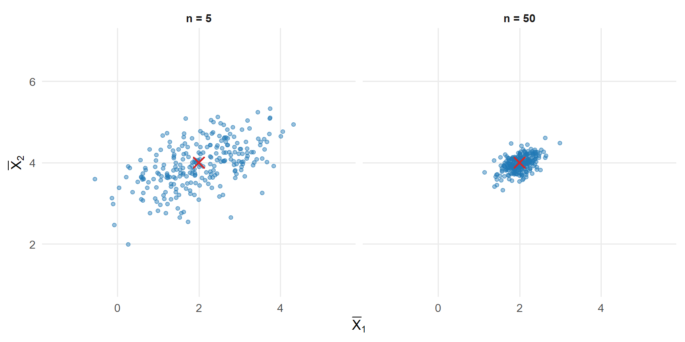
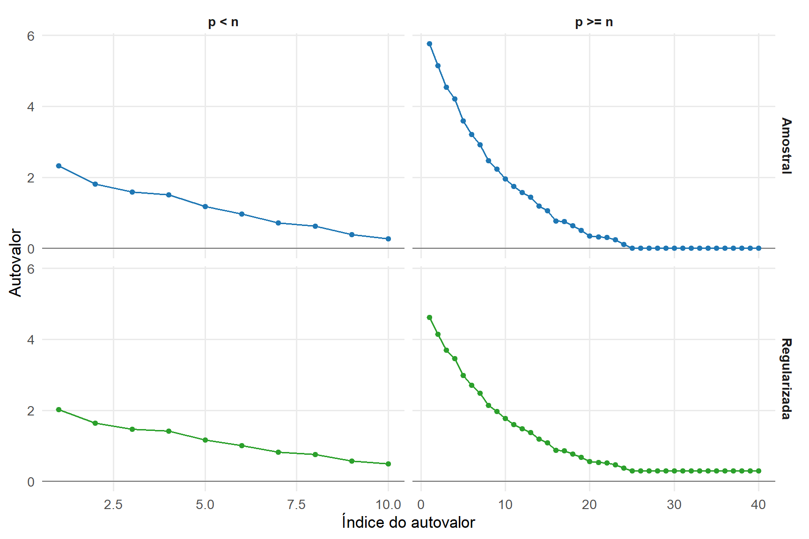

10 Estatísticas Amostrais e Estimação
O Capítulo 8 desenvolveu o vetor de médias populacional em Equação 8.1 e a matriz de covariâncias populacional em Definição 8.2. O Capítulo 9, por sua vez, formulou a distribuição normal multivariada em Definição 9.1. Até esse ponto, \(\boldsymbol{\mu}\) e \(\boldsymbol{\Sigma}\) foram tratados como parâmetros populacionais. Em uma aplicação estatística, esses parâmetros geralmente são desconhecidos e precisam ser estimados a partir de uma amostra.
O objetivo deste capítulo é passar dos objetos populacionais às estatísticas definidas sobre uma amostra multivariada e estudar sua utilização como estimadores. Serão desenvolvidos o vetor de médias amostrais, a matriz de somas de quadrados e produtos cruzados (SQPC), os estimadores da matriz de covariâncias, a matriz de correlações amostral e as covariâncias cruzadas entre blocos de variáveis.
Os métodos dos momentos e da máxima verossimilhança serão utilizados como princípios de construção de estimadores. As propriedades matemáticas e os resultados de cálculo matricial estabelecidos no Módulo 1 serão retomados somente quando necessários.
As distribuições amostrais exatas, a distribuição de Wishart, a independência entre o vetor de médias e a matriz de covariâncias amostrais sob normalidade e os procedimentos de inferência serão desenvolvidos no Capítulo 12. Neste capítulo, o objetivo é construir os principais estimadores de localização, dispersão e associação, estudar suas propriedades e examinar limitações associadas ao tamanho amostral e à dimensão.
10.1 Da população à amostra
Considere um vetor aleatório
\[ \boldsymbol{\mathsf X} = \begin{bmatrix} X_1\\ \vdots\\ X_p \end{bmatrix} \in \mathbb R^p \]
com distribuição pertencente a uma família
\[ \left\{ F_{\boldsymbol{\theta}}: \boldsymbol{\theta}\in\Theta \right\}, \]
em que \(\boldsymbol{\theta}\) representa o conjunto de parâmetros desconhecidos e \(\Theta\) é o espaço paramétrico.
Quando existem momentos de primeira e segunda ordem, o vetor de médias e a matriz de covariâncias definidos em Equação 8.1 e Definição 8.2 satisfazem
\[ E \left( \boldsymbol{\mathsf X} \right) = \boldsymbol{\mu} \in \mathbb R^p \]
e
\[ \operatorname{Cov} \left( \boldsymbol{\mathsf X} \right) = \boldsymbol{\Sigma} \in \mathbb R^{p\times p}. \]
Os parâmetros são características fixas da distribuição populacional. A aleatoriedade introduzida pelo processo de amostragem está nos vetores que compõem a amostra e, consequentemente, nas estatísticas definidas a partir deles.
10.1.1 Amostra aleatória multivariada
A unidade amostral de um estudo multivariado é um vetor. Cada unidade fornece simultaneamente os valores das \(p\) variáveis que compõem \(\boldsymbol{\mathsf X}\).
Definição 10.1 (Amostra aleatória multivariada) Uma amostra aleatória multivariada de tamanho \(n\) proveniente de \(F_{\boldsymbol{\theta}}\) é uma coleção de vetores aleatórios
\[ \boldsymbol{\mathsf X}_1, \ldots, \boldsymbol{\mathsf X}_n \in \mathbb R^p \]
independentes e identicamente distribuídos:
\[ \boldsymbol{\mathsf X}_1, \ldots, \boldsymbol{\mathsf X}_n \overset{\mathrm{iid}}{\sim} F_{\boldsymbol{\theta}}. \tag{10.1}\]
A notação
\[ \overset{\mathrm{iid}}{\sim} \]
indica que os vetores aleatórios são independentes e identicamente distribuídos segundo a mesma distribuição.
A condição de distribuição idêntica estabelece que todas as unidades são regidas pela mesma distribuição populacional. A independência estabelece que a realização de uma unidade não altera a distribuição das demais unidades.
Quando a distribuição populacional possui densidade em relação a uma medida comum, a independência implica
\[ f_{\boldsymbol{\theta}}^{(n)} \left( \mathbf x_1,\ldots,\mathbf x_n \right) = \prod_{i=1}^{n} f_{\boldsymbol{\theta}} \left( \mathbf x_i \right). \tag{10.2}\]
A independência também implica a fatoração da função de distribuição conjunta da amostra:
\[ F_{\boldsymbol{\theta}}^{(n)} \left( \mathbf x_1,\ldots,\mathbf x_n \right) = \prod_{i=1}^{n} F_{\boldsymbol{\theta}} \left( \mathbf x_i \right). \tag{10.3}\]
Essas fatorações dizem respeito à independência entre unidades amostrais. A dependência entre as componentes de um mesmo vetor continua representada pela distribuição multivariada \(F_{\boldsymbol{\theta}}\).
Cada vetor da amostra possui a forma
\[ \boldsymbol{\mathsf X}_i = \begin{bmatrix} X_{i1}\\ X_{i2}\\ \vdots\\ X_{ip} \end{bmatrix}, \qquad i=1,\ldots,n, \]
em que \(X_{ij}\) representa a variável \(j\) na unidade \(i\).
A independência entre
\[ \boldsymbol{\mathsf X}_1,\ldots,\boldsymbol{\mathsf X}_n \]
não implica independência entre
\[ X_{i1},\ldots,X_{ip}. \]
As componentes de uma mesma unidade podem apresentar covariâncias e outras formas de dependência.
Quando os segundos momentos existem,
\[ E \left( \boldsymbol{\mathsf X}_i \right) = \boldsymbol{\mu} \]
e
\[ \operatorname{Cov} \left( \boldsymbol{\mathsf X}_i \right) = \boldsymbol{\Sigma} \]
para todo \(i\). Para unidades distintas,
\[ \operatorname{Cov} \left( \boldsymbol{\mathsf X}_i, \boldsymbol{\mathsf X}_\ell \right) = \mathbf 0, \qquad i\neq\ell, \]
como consequência da independência.
No modelo normal multivariado definido em Definição 9.1,
\[ \boldsymbol{\mathsf X}_1, \ldots, \boldsymbol{\mathsf X}_n \overset{\mathrm{iid}}{\sim} N_p \left( \boldsymbol{\mu}, \boldsymbol{\Sigma} \right). \tag{10.4}\]
A definição do vetor de médias amostrais, da matriz SQPC, da matriz de covariâncias amostral e da matriz de correlações amostral não exige normalidade. Neste capítulo, a hipótese normal será utilizada especificamente na obtenção dos estimadores de máxima verossimilhança de \(\boldsymbol{\mu}\) e \(\boldsymbol{\Sigma}\). As distribuições amostrais exatas e os resultados inferenciais associados serão desenvolvidos no Capítulo 12.
10.1.2 Matriz aleatória da amostra e matriz observada
Os vetores da amostra podem ser organizados nas linhas de uma matriz aleatória.
Definição 10.2 (Matriz aleatória da amostra) A matriz aleatória associada à amostra é
\[ \boldsymbol{\mathcal X} = \begin{bmatrix} \boldsymbol{\mathsf X}_1^\top\\ \boldsymbol{\mathsf X}_2^\top\\ \vdots\\ \boldsymbol{\mathsf X}_n^\top \end{bmatrix} = \begin{bmatrix} X_{11} & X_{12} & \cdots & X_{1p}\\ X_{21} & X_{22} & \cdots & X_{2p}\\ \vdots & \vdots & \ddots & \vdots\\ X_{n1} & X_{n2} & \cdots & X_{np} \end{bmatrix} \in \mathbb R^{n\times p}. \tag{10.5}\]
Antes da coleta dos dados, os elementos de \(\boldsymbol{\mathcal X}\) são variáveis aleatórias. Cada possível resultado do processo amostral corresponde a uma matriz numérica.
Após a observação da amostra, uma realização de \(\boldsymbol{\mathcal X}\) é denotada por
\[ \mathbf X = \begin{bmatrix} \mathbf x_1^\top\\ \mathbf x_2^\top\\ \vdots\\ \mathbf x_n^\top \end{bmatrix} = \begin{bmatrix} x_{11} & x_{12} & \cdots & x_{1p}\\ x_{21} & x_{22} & \cdots & x_{2p}\\ \vdots & \vdots & \ddots & \vdots\\ x_{n1} & x_{n2} & \cdots & x_{np} \end{bmatrix} \in \mathbb R^{n\times p}. \tag{10.6}\]
A diferença tipográfica registra a natureza dos objetos:
- \(\boldsymbol{\mathcal X}\) é a matriz aleatória da amostra;
- \(\mathbf X\) é a matriz de dados observada;
- \(\boldsymbol{\mathsf X}_i\) é o vetor aleatório correspondente à unidade \(i\);
- \(\mathbf x_i\) é sua realização;
- \(X_{ij}\) é uma variável aleatória;
- \(x_{ij}\) é o valor observado correspondente.
Se o suporte de \(\boldsymbol{\mathsf X}\) é
\[ \mathcal S_{\mathsf X} \subseteq \mathbb R^p, \]
o espaço das possíveis amostras é
\[ \mathcal S_{\mathsf X}^n. \]
No caso em que
\[ \mathcal S_{\mathsf X} = \mathbb R^p, \]
esse espaço pode ser identificado com
\[ \left( \mathbb R^p \right)^n \]
ou, equivalentemente, com o conjunto das matrizes reais \(n\times p\).
Uma estatística associa a cada possível realização da amostra uma quantidade escalar, vetorial ou matricial. Antes da observação da amostra, ela constitui um objeto aleatório; após a observação, obtém-se seu valor calculado a partir de \(\mathbf X\).
10.1.3 Parâmetros, estatísticas, estimadores e estimativas
Um parâmetro é uma característica fixa da distribuição populacional. Ele pode ser escalar, vetorial ou matricial.
Neste capítulo, as principais quantidades populacionais de interesse são o vetor de médias \(\boldsymbol{\mu}\), definido em Equação 8.1, a matriz de covariâncias \(\boldsymbol{\Sigma}\), definida em Definição 8.2, e a matriz de correlações \(\boldsymbol{\mathcal R}\), definida em Definição 8.5.
A matriz \(\boldsymbol{\mathcal R}\) é determinada por \(\boldsymbol{\Sigma}\) e, portanto, não constitui um parâmetro adicional quando a matriz de covariâncias já integra a parametrização do modelo.
No modelo normal multivariado não singular definido em Definição 9.1, o parâmetro completo pode ser representado por
\[ \boldsymbol{\theta} = \left( \boldsymbol{\mu}, \boldsymbol{\Sigma} \right), \]
com espaço paramétrico
\[ \Theta = \left\{ \left( \boldsymbol{\mu}, \boldsymbol{\Sigma} \right): \boldsymbol{\mu}\in\mathbb R^p, \; \boldsymbol{\Sigma}\succ\mathbf 0 \right\}. \]
Definição 10.3 (Estatística amostral) Uma estatística é uma função da amostra aleatória que não contém parâmetros desconhecidos em sua expressão. De forma genérica, será representada por
\[ \boldsymbol{\mathsf G} = G \left( \boldsymbol{\mathcal X} \right). \tag{10.7}\]
A estatística pode assumir valores escalares, vetoriais ou matriciais.
Embora a expressão da estatística não contenha parâmetros desconhecidos, sua distribuição amostral pode depender dos parâmetros da distribuição populacional.
O vetor de médias amostrais é um exemplo de estatística vetorial:
\[ \bar{\boldsymbol{\mathsf X}} = \frac{1}{n} \sum_{i=1}^{n} \boldsymbol{\mathsf X}_i. \tag{10.8}\]
Após a observação da amostra,
\[ \bar{\mathbf x} = \frac{1}{n} \sum_{i=1}^{n} \mathbf x_i. \tag{10.9}\]
A distribuição de uma estatística é denominada distribuição amostral. Ela descreve como a estatística varia entre as possíveis realizações da amostra aleatória de tamanho \(n\).
Uma estatística torna-se um estimador quando é utilizada para aproximar um parâmetro desconhecido.
Definição 10.4 (Estimador e estimativa) Um estimador de um parâmetro \(\boldsymbol{\theta}\) é uma estatística
\[ \widehat{\boldsymbol{\theta}} = G \left( \boldsymbol{\mathcal X} \right) \tag{10.10}\]
utilizada para estimar \(\boldsymbol{\theta}\).
A estimativa é o valor assumido pelo estimador após a observação da amostra:
\[ \widehat{\boldsymbol{\theta}}_{\mathrm{obs}} = G \left( \mathbf X \right). \tag{10.11}\]
Todo estimador é uma estatística, mas nem toda estatística precisa ser utilizada para estimar um parâmetro. A função atribuída à estatística depende do objetivo da análise.
Assim,
\[ \bar{\boldsymbol{\mathsf X}} \]
é um estimador de \(\boldsymbol{\mu}\), enquanto
\[ \bar{\mathbf x} \]
é a estimativa obtida para uma amostra específica.
Mais adiante, a matriz de covariâncias amostral
\[ \boldsymbol{\mathsf S} \]
será definida como estimador de \(\boldsymbol{\Sigma}\), enquanto
\[ \mathbf S \]
representará sua realização observada.
O erro de estimação é
\[ \widehat{\boldsymbol{\theta}} - \boldsymbol{\theta}. \tag{10.12}\]
Como o estimador é uma função da amostra aleatória, o erro de estimação também é aleatório. Sua distribuição permite avaliar propriedades do procedimento de estimação.
Um mesmo parâmetro pode possuir diferentes estimadores. Para \(\boldsymbol{\Sigma}\), por exemplo, serão estudados o estimador não viesado
\[ \boldsymbol{\mathsf S} = \frac{1}{n-1} \boldsymbol{\mathsf T} \]
e, sob o modelo normal multivariado, o estimador de máxima verossimilhança
\[ \widehat{\boldsymbol{\Sigma}}_{\mathrm{MV}} = \frac{1}{n} \boldsymbol{\mathsf T}, \]
ambos construídos a partir da matriz SQPC \(\boldsymbol{\mathsf T}\).
A estimação pontual utiliza uma estimativa única para representar o parâmetro. A estimação por regiões utiliza conjuntos construídos para quantificar a incerteza associada ao processo amostral. Neste capítulo será desenvolvida a estimação pontual. As regiões de confiança serão tratadas no Capítulo 12.
A comparação entre estimadores exige critérios que descrevam seu comportamento ao longo das possíveis amostras. Viés, variabilidade, erro quadrático médio, consistência, eficiência, suficiência e equivariância serão examinados a seguir. Questões de sensibilidade e robustez serão retomadas posteriormente como aprofundamento.
10.2 Propriedades dos estimadores multivariados
A existência de um estimador não determina sua adequação. Diferentes estatísticas podem estimar o mesmo parâmetro e apresentar comportamentos distintos ao longo das possíveis amostras.
Considere
\[ \boldsymbol{\theta} \in \Theta \subseteq \mathbb R^r \]
e um estimador
\[ \widehat{\boldsymbol{\theta}} = G \left( \boldsymbol{\mathcal X} \right) \in \mathbb R^r. \]
A avaliação de \(\widehat{\boldsymbol{\theta}}\) depende de sua distribuição amostral e do critério utilizado para comparar procedimentos. Viés, variabilidade, erro quadrático médio e comparações de eficiência podem ser considerados para um tamanho amostral fixo. A consistência e a eficiência assintótica tratam do comportamento de sequências de estimadores quando \(n\) aumenta. A suficiência examina a informação preservada pela redução da amostra, enquanto a equivariância descreve a coerência do procedimento sob transformações (Casella; Berger, 2002). Questões de sensibilidade e robustez serão tratadas posteriormente como aprofundamento.
10.2.1 Viés e variabilidade
Definição 10.5 (Viés de um estimador) Se \(E(\widehat{\boldsymbol{\theta}})\) existe, o viés de \(\widehat{\boldsymbol{\theta}}\) na estimação de \(\boldsymbol{\theta}\) é
\[ \operatorname{Bias} \left( \widehat{\boldsymbol{\theta}} \right) = E \left( \widehat{\boldsymbol{\theta}} \right) - \boldsymbol{\theta}. \tag{10.13}\]
O estimador é não viesado quando
\[ E \left( \widehat{\boldsymbol{\theta}} \right) = \boldsymbol{\theta}. \]
O viés é um vetor em \(\mathbb R^r\). Sua componente \(j\) é
\[ E \left( \widehat{\theta}_j \right) - \theta_j. \]
A ausência de viés descreve o comportamento médio do procedimento sobre as possíveis amostras. Ela não garante que uma estimativa particular esteja próxima do parâmetro.
Para um parâmetro matricial
\[ \boldsymbol{\Theta} \in \mathbb R^{a\times b} \]
e um estimador
\[ \widehat{\boldsymbol{\Theta}} \in \mathbb R^{a\times b}, \]
define-se, elemento a elemento,
\[ \operatorname{Bias} \left( \widehat{\boldsymbol{\Theta}} \right) = E \left( \widehat{\boldsymbol{\Theta}} \right) - \boldsymbol{\Theta}. \tag{10.14}\]
A variabilidade de um estimador vetorial é descrita por
\[ \operatorname{Cov} \left( \widehat{\boldsymbol{\theta}} \right) = E \left[ \left\{ \widehat{\boldsymbol{\theta}} - E \left( \widehat{\boldsymbol{\theta}} \right) \right\} \left\{ \widehat{\boldsymbol{\theta}} - E \left( \widehat{\boldsymbol{\theta}} \right) \right\}^{\top} \right]. \tag{10.15}\]
Os elementos diagonais são as variâncias de seus componentes e os elementos fora da diagonal são as covariâncias entre eles.
Para qualquer \(\mathbf a\in\mathbb R^r\),
\[ \operatorname{Var} \left( \mathbf a^\top \widehat{\boldsymbol{\theta}} \right) = \mathbf a^\top \operatorname{Cov} \left( \widehat{\boldsymbol{\theta}} \right) \mathbf a. \]
Uma medida escalar da variabilidade total é
\[ \operatorname{tr} \left[ \operatorname{Cov} \left( \widehat{\boldsymbol{\theta}} \right) \right] = \sum_{j=1}^{r} \operatorname{Var} \left( \widehat{\theta}_j \right). \]
Esse resumo depende da escala e da parametrização e não substitui a matriz de covariâncias quando a dependência entre os componentes do estimador é relevante.
Para um estimador matricial, uma representação da variabilidade é
\[ \operatorname{Cov} \left[ \operatorname{vec} \left( \widehat{\boldsymbol{\Theta}} \right) \right]. \]
O operador \(\operatorname{vec}\), definido em Definição 7.9, transforma a matriz estimada em um vetor e permite representar conjuntamente a variabilidade de todos os seus elementos.
10.2.2 Erro quadrático médio e funções de perda
A comparação entre estimadores requer especificar como diferentes erros são avaliados. Essa escolha é formalizada por uma função de perda. Para uma perda \(L\), o risco do estimador é seu valor esperado sob o parâmetro \(\boldsymbol{\theta}\):
\[ R \left( \boldsymbol{\theta}, \widehat{\boldsymbol{\theta}} \right) = E_{\boldsymbol{\theta}} \left[ L \left( \widehat{\boldsymbol{\theta}}, \boldsymbol{\theta} \right) \right]. \]
Assim, diferentes funções de perda podem conduzir a diferentes critérios de comparação entre estimadores (Casella; Berger, 2002).
Para um estimador vetorial, considere a perda quadrática euclidiana
\[ L \left( \widehat{\boldsymbol{\theta}}, \boldsymbol{\theta} \right) = \left\| \widehat{\boldsymbol{\theta}} - \boldsymbol{\theta} \right\|^2. \tag{10.16}\]
Essa escolha atribui o mesmo peso às coordenadas na parametrização utilizada. Outros problemas podem exigir ponderações ou perdas diferentes.
Definição 10.6 (Erro quadrático médio vetorial) Sob a perda quadrática euclidiana,
\[ \operatorname{EQM} \left( \widehat{\boldsymbol{\theta}} \right) = E \left[ \left\| \widehat{\boldsymbol{\theta}} - \boldsymbol{\theta} \right\|^2 \right]. \tag{10.17}\]
Proposição 10.1 (Decomposição do erro quadrático médio) Se \(\widehat{\boldsymbol{\theta}}\) possui segundos momentos finitos, então
\[ \operatorname{EQM} \left( \widehat{\boldsymbol{\theta}} \right) = \operatorname{tr} \left[ \operatorname{Cov} \left( \widehat{\boldsymbol{\theta}} \right) \right] + \left\| \operatorname{Bias} \left( \widehat{\boldsymbol{\theta}} \right) \right\|^2. \tag{10.18}\]
Comprovação. Escreva
\[ \widehat{\boldsymbol{\theta}} - \boldsymbol{\theta} = \left[ \widehat{\boldsymbol{\theta}} - E \left( \widehat{\boldsymbol{\theta}} \right) \right] + \operatorname{Bias} \left( \widehat{\boldsymbol{\theta}} \right). \]
O primeiro termo possui média zero. Ao expandir o quadrado da norma e tomar esperança, o termo cruzado desaparece. Além disso,
\[ E \left[ \left\| \widehat{\boldsymbol{\theta}} - E \left( \widehat{\boldsymbol{\theta}} \right) \right\|^2 \right] = \operatorname{tr} \left[ \operatorname{Cov} \left( \widehat{\boldsymbol{\theta}} \right) \right]. \]
Substituindo essas relações, obtém-se Equação 10.18.
Quando o estimador é não viesado,
\[ \operatorname{EQM} \left( \widehat{\boldsymbol{\theta}} \right) = \operatorname{tr} \left[ \operatorname{Cov} \left( \widehat{\boldsymbol{\theta}} \right) \right]. \] A decomposição em Equação 10.18 também pode ser vista como uma aplicação de Equação 8.38, tomando a matriz identidade e considerando \(\widehat{\boldsymbol{\theta}}\) como vetor aleatório com média \(E(\widehat{\boldsymbol{\theta}})\).
A ausência de viés não implica EQM mínimo. Um estimador viesado pode apresentar menor risco quadrático se a redução de variabilidade compensar o viés. Essa ideia será retomada na seção de regularização.
Para parâmetros matriciais, uma escolha correspondente é a perda baseada na norma de Frobenius definida em Definição 6.7:
\[ L_F \left( \widehat{\boldsymbol{\Theta}}, \boldsymbol{\Theta} \right) = \left\| \widehat{\boldsymbol{\Theta}} - \boldsymbol{\Theta} \right\|_F^2. \]
O erro quadrático médio matricial é
\[ \operatorname{EQM}_F \left( \widehat{\boldsymbol{\Theta}} \right) = E \left[ \left\| \widehat{\boldsymbol{\Theta}} - \boldsymbol{\Theta} \right\|_F^2 \right]. \tag{10.19}\]
Equivalentemente,
\[ \begin{aligned} \operatorname{EQM}_F \left( \widehat{\boldsymbol{\Theta}} \right) &= \operatorname{tr} \left\{ \operatorname{Cov} \left[ \operatorname{vec} \left( \widehat{\boldsymbol{\Theta}} \right) \right] \right\} \\ &\quad+ \left\| \operatorname{Bias} \left( \widehat{\boldsymbol{\Theta}} \right) \right\|_F^2. \end{aligned} \tag{10.20}\]
A norma de Frobenius corresponde a uma escolha específica de perda. Em problemas de estimação de matrizes de covariâncias, outros critérios podem atribuir pesos diferentes a autovalores, direções ou erros de inversão.
10.2.3 Consistência
A consistência descreve o comportamento de uma sequência de estimadores quando o tamanho da amostra aumenta (Vaart, 1998).
Definição 10.7 (Consistência) Uma sequência
\[ \widehat{\boldsymbol{\theta}}_n \]
é consistente para \(\boldsymbol{\theta}\) quando
\[ \widehat{\boldsymbol{\theta}}_n \xrightarrow{P} \boldsymbol{\theta} \tag{10.21}\]
quando \(n\to\infty\).
A notação
\[ \xrightarrow{P} \]
indica convergência em probabilidade. Isso significa que, para todo \(\varepsilon>0\), \[ P \left( \left\| \widehat{\boldsymbol{\theta}}_n - \boldsymbol{\theta} \right\| > \varepsilon \right) \longrightarrow 0. \tag{10.22}\]
Na formulação clássica deste capítulo, a dimensão do parâmetro é mantida fixa enquanto \(n\) aumenta. Quando a dimensão também varia com \(n\), é necessário declarar o regime dimensional e a métrica utilizada para avaliar o erro. Essa distinção será retomada na seção de aprofundamento sobre alta dimensão.
10.2.4 Eficiência
Para estimadores vetoriais não viesados, uma comparação natural considera suas matrizes de covariâncias. Considere dois estimadores
\[ \widehat{\boldsymbol{\theta}}_1 \qquad \text{e} \qquad \widehat{\boldsymbol{\theta}}_2, \]
ambos não viesados para \(\boldsymbol{\theta}\).
Diz-se que \(\widehat{\boldsymbol{\theta}}_1\) é uniformemente pelo menos tão eficiente quanto \(\widehat{\boldsymbol{\theta}}_2\), segundo a ordem de Löwner, quando \[ \operatorname{Cov}_{\boldsymbol{\theta}} \left( \widehat{\boldsymbol{\theta}}_1 \right) \preceq \operatorname{Cov}_{\boldsymbol{\theta}} \left( \widehat{\boldsymbol{\theta}}_2 \right) \qquad \text{para todo } \boldsymbol{\theta}\in\Theta. \tag{10.23}\]
Equivalentemente,
\[ \operatorname{Cov}_{\boldsymbol{\theta}} \left( \widehat{\boldsymbol{\theta}}_2 \right) - \operatorname{Cov}_{\boldsymbol{\theta}} \left( \widehat{\boldsymbol{\theta}}_1 \right) \succeq \mathbf 0. \]
Consequentemente, para todo \(\mathbf a\in\mathbb R^r\),
\[ \operatorname{Var}_{\boldsymbol{\theta}} \left( \mathbf a^\top \widehat{\boldsymbol{\theta}}_1 \right) \leq \operatorname{Var}_{\boldsymbol{\theta}} \left( \mathbf a^\top \widehat{\boldsymbol{\theta}}_2 \right). \]
A ordem de Loewner é parcial. Duas matrizes de covariâncias podem não ser comparáveis; nesse caso, um estimador pode apresentar menor variabilidade em determinadas direções e maior variabilidade em outras.
Uma comparação escalar pode utilizar, por exemplo,
\[ \operatorname{tr} \left[ \operatorname{Cov} \left( \widehat{\boldsymbol{\theta}} \right) \right], \]
mas outra função de perda pode produzir uma ordenação diferente.
Para estimadores viesados, a comparação baseada somente nas matrizes de covariâncias é insuficiente. É necessário considerar um risco que incorpore viés e variabilidade.
A eficiência assintótica compara as matrizes que aparecem nas distribuições-limite de sequências de estimadores. Sob condições de regularidade, estimadores de máxima verossimilhança podem atingir limites associados à informação de Fisher definida em Definição 7.18. Os resultados assintóticos correspondentes não serão desenvolvidos neste capítulo e serão retomados no contexto inferencial do Capítulo 12.
10.2.5 Suficiência
Uma estatística suficiente preserva, segundo o modelo adotado, a informação da amostra sobre o parâmetro no sentido de que a distribuição condicional da amostra, dada essa estatística, não depende do parâmetro (Casella; Berger, 2002).
Definição 10.8 (Estatística suficiente) Uma estatística
\[ \boldsymbol{\mathsf G} = G \left( \boldsymbol{\mathcal X} \right) \]
é suficiente para \(\boldsymbol{\theta}\) quando a distribuição condicional da amostra, dada \(\boldsymbol{\mathsf G}\), não depende de \(\boldsymbol{\theta}\).
Para famílias dominadas por uma medida comum, o Teorema da Fatoração de Neyman–Fisher fornece um critério equivalente.
Teorema 10.1 (Teorema da Fatoração de Neyman–Fisher) Considere uma família dominada por uma medida comum, com densidade ou função de probabilidade conjunta
\[ f_{\boldsymbol{\theta}} \left( \mathbf x \right), \qquad \boldsymbol{\theta}\in\Theta. \]
A estatística
\[ G \left( \mathbf x \right) \]
é suficiente para \(\boldsymbol{\theta}\) se, e somente se, existem funções não negativas \(g_{\boldsymbol{\theta}}\) e \(h\) tais que
\[ f_{\boldsymbol{\theta}} \left( \mathbf x \right) = g_{\boldsymbol{\theta}} \left[ G \left( \mathbf x \right) \right] h \left( \mathbf x \right), \tag{10.24}\]
em que \(h\) não depende de \(\boldsymbol{\theta}\).
No modelo normal multivariado definido em Definição 9.1, o vetor de médias amostrais e a matriz SQPC formam conjuntamente uma estatística suficiente para \(\boldsymbol{\mu}\) e \(\boldsymbol{\Sigma}\) (Anderson, 2003).
Proposição 10.2 (Suficiência no modelo normal multivariado) Considere
\[ \boldsymbol{\mathsf X}_1, \ldots, \boldsymbol{\mathsf X}_n \overset{\mathrm{iid}}{\sim} N_p \left( \boldsymbol{\mu}, \boldsymbol{\Sigma} \right), \]
com
\[ \boldsymbol{\Sigma} \succ \mathbf 0. \]
Defina o vetor de médias amostrais
\[ \bar{\boldsymbol{\mathsf X}} = \frac{1}{n} \sum_{i=1}^{n} \boldsymbol{\mathsf X}_i \]
e a matriz SQPC
\[ \boldsymbol{\mathsf T} = \sum_{i=1}^{n} \left( \boldsymbol{\mathsf X}_i - \bar{\boldsymbol{\mathsf X}} \right) \left( \boldsymbol{\mathsf X}_i - \bar{\boldsymbol{\mathsf X}} \right)^\top. \tag{10.25}\]
Então,
\[ \left( \bar{\boldsymbol{\mathsf X}}, \boldsymbol{\mathsf T} \right) \]
é suficiente para
\[ \left( \boldsymbol{\mu}, \boldsymbol{\Sigma} \right). \]
Comprovação. Para uma realização \(\mathbf x_1,\ldots,\mathbf x_n\), a densidade conjunta é
\[ \begin{aligned} f_{\boldsymbol{\mu},\boldsymbol{\Sigma}} \left( \mathbf x_1,\ldots,\mathbf x_n \right) &= (2\pi)^{-np/2} \det \left( \boldsymbol{\Sigma} \right)^{-n/2} \\ &\quad\times \exp \left\{ -\frac{1}{2} \sum_{i=1}^{n} \left( \mathbf x_i-\boldsymbol{\mu} \right)^\top \boldsymbol{\Sigma}^{-1} \left( \mathbf x_i-\boldsymbol{\mu} \right) \right\}. \end{aligned} \]
A identidade de decomposição em torno da média fornece
\[ \begin{aligned} & \sum_{i=1}^{n} \left( \mathbf x_i-\boldsymbol{\mu} \right) \left( \mathbf x_i-\boldsymbol{\mu} \right)^\top \\ &= \mathbf T + n \left( \bar{\mathbf x}-\boldsymbol{\mu} \right) \left( \bar{\mathbf x}-\boldsymbol{\mu} \right)^\top, \end{aligned} \]
em que \(\mathbf T\) é a matriz SQPC observada definida em Definição 8.10:
\[ \mathbf T = \sum_{i=1}^{n} \left( \mathbf x_i-\bar{\mathbf x} \right) \left( \mathbf x_i-\bar{\mathbf x} \right)^\top. \]
Logo, toda a dependência da densidade conjunta em relação a \(\boldsymbol{\mu}\) e \(\boldsymbol{\Sigma}\) ocorre por meio de
\[ \left( \bar{\mathbf x}, \mathbf T \right). \]
O resultado segue de Teorema 10.1.
A suficiência não implica, por si só, ausência de viés, consistência ou eficiência. Ela afirma que, sob o modelo considerado, a redução da amostra à estatística suficiente não perde informação sobre o parâmetro.
10.2.6 Equivariância
Uma transformação dos dados pode induzir uma transformação correspondente no parâmetro. Um procedimento equivariante respeita essa relação.
Definição 10.9 (Equivariância de um estimador) Considere uma transformação \(h\) aplicada à amostra e uma transformação \(g\) aplicada ao parâmetro. Um estimador definido pela regra \(G\) é equivariante quando
\[ G \left[ h \left( \boldsymbol{\mathcal X} \right) \right] = g \left[ G \left( \boldsymbol{\mathcal X} \right) \right]. \tag{10.26}\]
Considere, por exemplo,
\[ \boldsymbol{\mathsf Y}_i = \mathbf C \boldsymbol{\mathsf X}_i + \mathbf d, \qquad i=1,\ldots,n, \]
com
\[ \mathbf C \in \mathbb R^{q\times p} \qquad \text{e} \qquad \mathbf d \in \mathbb R^q. \]
O vetor de médias transformado é
\[ \boldsymbol{\mu}_Y = \mathbf C \boldsymbol{\mu} + \mathbf d, \]
e, por Proposição 8.6, a matriz de covariâncias transformada é
\[ \boldsymbol{\Sigma}_Y = \mathbf C \boldsymbol{\Sigma} \mathbf C^\top. \]
Os estimadores usuais que serão construídos adiante satisfazem
\[ \bar{\boldsymbol{\mathsf Y}} = \mathbf C \bar{\boldsymbol{\mathsf X}} + \mathbf d \]
e
\[ \boldsymbol{\mathsf S}_Y = \mathbf C \boldsymbol{\mathsf S}_X \mathbf C^\top. \]
A equivariância é uma propriedade do procedimento em relação às transformações consideradas. Ela deve ser distinguida da propriedade de invariância da máxima verossimilhança, que trata da estimação de funções de parâmetros a partir de um estimador de máxima verossimilhança já obtido.
As propriedades desta seção não estabelecem uma ordenação universal entre estimadores. Um procedimento pode apresentar vantagens segundo um critério e desvantagens segundo outro. A escolha depende do parâmetro de interesse, da função de perda, do modelo probabilístico, do tamanho amostral, da dimensão e do objetivo da análise.
Os métodos dos momentos e da máxima verossimilhança fornecem dois princípios gerais para construir os estimadores estudados a seguir.
10.3 Métodos de estimação
Um estimador pode ser construído a partir de diferentes princípios. O método dos momentos relaciona momentos populacionais a seus correspondentes amostrais. A máxima verossimilhança escolhe os valores dos parâmetros que tornam os dados observados mais compatíveis com o modelo especificado (Casella; Berger, 2002).
Os dois métodos podem produzir o mesmo estimador em determinados modelos, mas essa coincidência não ocorre em geral. O método utilizado para construir um estimador também não determina, isoladamente, seu viés, consistência, eficiência ou robustez. Essas propriedades devem ser analisadas separadamente.
10.3.1 Método dos momentos
Considere um parâmetro
\[ \boldsymbol{\theta} \in \Theta \subseteq \mathbb R^r \]
e um vetor de funções
\[ \mathbf q \left( \boldsymbol{\mathsf X} \right) \in \mathbb R^r \]
cujas esperanças existem. Defina
\[ \mathbf m \left( \boldsymbol{\theta} \right) = E_{\boldsymbol{\theta}} \left[ \mathbf q \left( \boldsymbol{\mathsf X} \right) \right]. \tag{10.27}\]
O correspondente amostral é
\[ \widehat{\mathbf m} = \frac{1}{n} \sum_{i=1}^{n} \mathbf q \left( \boldsymbol{\mathsf X}_i \right). \tag{10.28}\]
Definição 10.10 (Estimador pelo método dos momentos) Um estimador pelo método dos momentos de \(\boldsymbol{\theta}\) é uma solução de
\[ \mathbf m \left( \widehat{\boldsymbol{\theta}}_{\mathrm{MM}} \right) = \widehat{\mathbf m}. \tag{10.29}\]
A construção exige que os momentos escolhidos existam e forneçam informação suficiente sobre o parâmetro. O sistema em Equação 10.29 pode não possuir solução, pode possuir mais de uma solução ou pode produzir valores fora do espaço paramétrico.
Para o vetor de médias populacional,
\[ E \left( \boldsymbol{\mathsf X} \right) = \boldsymbol{\mu}. \]
O primeiro momento amostral é
\[ \frac{1}{n} \sum_{i=1}^{n} \boldsymbol{\mathsf X}_i = \bar{\boldsymbol{\mathsf X}}, \]
de modo que
\[ \widehat{\boldsymbol{\mu}}_{\mathrm{MM}} = \bar{\boldsymbol{\mathsf X}}. \tag{10.30}\]
Para a matriz de covariâncias, considere o segundo momento não central
\[ \mathbf M_2 = E \left( \boldsymbol{\mathsf X} \boldsymbol{\mathsf X}^{\top} \right). \]
Pela identidade Equação 8.3,
\[ \boldsymbol{\Sigma} = \mathbf M_2 - \boldsymbol{\mu} \boldsymbol{\mu}^{\top}. \]
Substituindo os momentos populacionais por seus correspondentes amostrais,
\[ \begin{aligned} \widehat{\boldsymbol{\Sigma}}_{\mathrm{MM}} &= \frac{1}{n} \sum_{i=1}^{n} \boldsymbol{\mathsf X}_i \boldsymbol{\mathsf X}_i^\top - \bar{\boldsymbol{\mathsf X}} \bar{\boldsymbol{\mathsf X}}^\top \\ &= \frac{1}{n} \sum_{i=1}^{n} \left( \boldsymbol{\mathsf X}_i - \bar{\boldsymbol{\mathsf X}} \right) \left( \boldsymbol{\mathsf X}_i - \bar{\boldsymbol{\mathsf X}} \right)^\top. \end{aligned} \tag{10.31}\]
A matriz no numerador é a versão aleatória da matriz total de somas de quadrados e produtos cruzados (SQPC) definida, para dados observados, em Definição 8.10. Será denotada por
\[ \boldsymbol{\mathsf T} = \sum_{i=1}^{n} \left( \boldsymbol{\mathsf X}_i - \bar{\boldsymbol{\mathsf X}} \right) \left( \boldsymbol{\mathsf X}_i - \bar{\boldsymbol{\mathsf X}} \right)^\top. \tag{10.32}\]
Portanto,
\[ \widehat{\boldsymbol{\Sigma}}_{\mathrm{MM}} = \frac{1}{n} \boldsymbol{\mathsf T}. \tag{10.33}\]
Essa construção utiliza apenas momentos de primeira e segunda ordem e não exige a hipótese de normalidade multivariada. O divisor \(n\) surge aqui diretamente do princípio do método dos momentos; posteriormente, ele também será obtido pela máxima verossimilhança sob o modelo normal.
A matriz \(\boldsymbol{\mathsf T}\) será desenvolvida em detalhes na seção dedicada à SQPC. Para cada realização da amostra, ela produz a matriz \(\mathbf T\) definida em Definição 8.10.
10.3.2 Verossimilhança e máxima verossimilhança
Considere um modelo parametrizado por
\[ \boldsymbol{\theta} \in \Theta, \]
no qual cada observação possui densidade ou função de probabilidade
\[ f \left( \mathbf x; \boldsymbol{\theta} \right). \]
Para uma amostra aleatória independente e identicamente distribuída,
\[ \boldsymbol{\mathsf X}_1, \ldots, \boldsymbol{\mathsf X}_n, \]
a contribuição conjunta das observações é o produto das contribuições individuais.
Definição 10.11 (Função de verossimilhança) Para uma amostra observada
\[ \mathbf x_1,\ldots,\mathbf x_n, \]
a função de verossimilhança é
\[ L \left( \boldsymbol{\theta}; \mathbf x_1,\ldots,\mathbf x_n \right) = \prod_{i=1}^{n} f \left( \mathbf x_i; \boldsymbol{\theta} \right). \tag{10.34}\]
Na função de verossimilhança, os dados observados permanecem fixos e \(\boldsymbol{\theta}\) varia em \(\Theta\). A verossimilhança não é, em geral, uma distribuição de probabilidade sobre o parâmetro.
A log-verossimilhança é
\[ \ell \left( \boldsymbol{\theta}; \mathbf x_1,\ldots,\mathbf x_n \right) = \log L \left( \boldsymbol{\theta}; \mathbf x_1,\ldots,\mathbf x_n \right), \]
e, sob independência,
\[ \ell \left( \boldsymbol{\theta}; \mathbf x_1,\ldots,\mathbf x_n \right) = \sum_{i=1}^{n} \log f \left( \mathbf x_i; \boldsymbol{\theta} \right). \tag{10.35}\]
Como o logaritmo é estritamente crescente, a verossimilhança e a log-verossimilhança possuem os mesmos pontos de máximo.
Definição 10.12 (Estimador de máxima verossimilhança) Um estimador de máxima verossimilhança de \(\boldsymbol{\theta}\) é uma estatística
\[ \widehat{\boldsymbol{\theta}}_{\mathrm{MV}} \]
que satisfaz
\[ \widehat{\boldsymbol{\theta}}_{\mathrm{MV}} \in \underset{ \boldsymbol{\theta}\in\Theta }{ \operatorname*{arg\,max} } \; L \left( \boldsymbol{\theta}; \boldsymbol{\mathcal X} \right). \tag{10.36}\]
Após a observação da amostra,
\[ \widehat{\boldsymbol{\theta}}_{\mathrm{MV,obs}} \in \underset{ \boldsymbol{\theta}\in\Theta }{ \operatorname*{arg\,max} } \; L \left( \boldsymbol{\theta}; \mathbf x_1,\ldots,\mathbf x_n \right). \]
A utilização de arg max permite registrar situações em que há mais de um ponto de máximo. A existência e a unicidade do estimador dependem do modelo, do espaço paramétrico e da amostra observada.
10.3.2.1 Máxima verossimilhança no modelo normal multivariado
Considere uma amostra do modelo normal multivariado definido em Definição 9.1:
\[ \boldsymbol{\mathsf X}_1, \ldots, \boldsymbol{\mathsf X}_n \overset{\mathrm{iid}}{\sim} N_p \left( \boldsymbol{\mu}, \boldsymbol{\Sigma} \right), \]
com
\[ \boldsymbol{\mu}\in\mathbb R^p \qquad \text{e} \qquad \boldsymbol{\Sigma}\succ\mathbf 0. \]
Pela densidade normal multivariada em Equação 9.10 e pela independência das unidades amostrais, para uma amostra observada a verossimilhança é
\[ \begin{aligned} L \left( \boldsymbol{\mu}, \boldsymbol{\Sigma} \right) &= (2\pi)^{-np/2} \det \left( \boldsymbol{\Sigma} \right)^{-n/2} \\ &\quad\times \exp \left\{ -\frac{1}{2} \sum_{i=1}^{n} \left( \mathbf x_i-\boldsymbol{\mu} \right)^\top \boldsymbol{\Sigma}^{-1} \left( \mathbf x_i-\boldsymbol{\mu} \right) \right\}. \end{aligned} \tag{10.37}\]
A log-verossimilhança é
\[ \begin{aligned} \ell \left( \boldsymbol{\mu}, \boldsymbol{\Sigma} \right) &= -\frac{np}{2}\log(2\pi) - \frac{n}{2} \log \det \left( \boldsymbol{\Sigma} \right) \\ &\quad- \frac{1}{2} \sum_{i=1}^{n} \left( \mathbf x_i-\boldsymbol{\mu} \right)^\top \boldsymbol{\Sigma}^{-1} \left( \mathbf x_i-\boldsymbol{\mu} \right). \end{aligned} \tag{10.38}\]
Considere a matriz SQPC observada \(\mathbf T\), definida em Definição 8.10:
\[ \mathbf T = \sum_{i=1}^{n} \left( \mathbf x_i-\bar{\mathbf x} \right) \left( \mathbf x_i-\bar{\mathbf x} \right)^\top. \tag{10.39}\]
Separando o afastamento em relação a \(\boldsymbol{\mu}\) no desvio em relação à média amostral e no deslocamento da própria média, obtém-se
\[ \begin{aligned} & \sum_{i=1}^{n} \left( \mathbf x_i-\boldsymbol{\mu} \right) \left( \mathbf x_i-\boldsymbol{\mu} \right)^\top \\ &= \mathbf T + n \left( \bar{\mathbf x}-\boldsymbol{\mu} \right) \left( \bar{\mathbf x}-\boldsymbol{\mu} \right)^\top. \end{aligned} \tag{10.40}\]
Utilizando a representação por traços,
\[ \begin{aligned} \ell \left( \boldsymbol{\mu}, \boldsymbol{\Sigma} \right) &= -\frac{np}{2}\log(2\pi) - \frac{n}{2} \log \det \left( \boldsymbol{\Sigma} \right) \\ &\quad- \frac{1}{2} \operatorname{tr} \left( \boldsymbol{\Sigma}^{-1} \mathbf T \right) \\ &\quad- \frac{n}{2} \left( \bar{\mathbf x}-\boldsymbol{\mu} \right)^\top \boldsymbol{\Sigma}^{-1} \left( \bar{\mathbf x}-\boldsymbol{\mu} \right). \end{aligned} \tag{10.41}\]
Para \(\boldsymbol{\Sigma}\) fixa, o último termo é não positivo na log-verossimilhança e atinge seu maior valor quando
\[ \boldsymbol{\mu} = \bar{\mathbf x}. \]
Substituindo esse valor, obtém-se a log-verossimilhança perfilada
\[ \ell_p \left( \boldsymbol{\Sigma} \right) = C - \frac{n}{2} \left\{ \log \det \left( \boldsymbol{\Sigma} \right) + \operatorname{tr} \left[ \boldsymbol{\Sigma}^{-1} \left( \frac{\mathbf T}{n} \right) \right] \right\}, \tag{10.42}\]
em que \(C\) não depende de \(\boldsymbol{\Sigma}\).
Proposição 10.3 (Estimadores de máxima verossimilhança no modelo normal) Considere
\[ \boldsymbol{\mathsf X}_1, \ldots, \boldsymbol{\mathsf X}_n \overset{\mathrm{iid}}{\sim} N_p \left( \boldsymbol{\mu}, \boldsymbol{\Sigma} \right), \]
com
\[ \boldsymbol{\Sigma} \succ \mathbf 0. \]
Para uma amostra observada, se
\[ \operatorname{posto} \left( \mathbf T \right) = p, \]
a função de verossimilhança possui máximo único no espaço paramétrico e
\[ \widehat{\boldsymbol{\mu}}_{\mathrm{MV,obs}} = \bar{\mathbf x}, \]
\[ \widehat{\boldsymbol{\Sigma}}_{\mathrm{MV,obs}} = \frac{\mathbf T}{n}. \]
No evento amostral em que a condição de posto se verifica, as regras correspondentes são
\[ \widehat{\boldsymbol{\mu}}_{\mathrm{MV}} = \bar{\boldsymbol{\mathsf X}} \tag{10.43}\]
e
\[ \widehat{\boldsymbol{\Sigma}}_{\mathrm{MV}} = \frac{\boldsymbol{\mathsf T}}{n}. \tag{10.44}\]
Comprovação. A maximização em relação a \(\boldsymbol{\mu}\) decorre de Equação 10.41. Como
\[ \boldsymbol{\Sigma}^{-1} \succ \mathbf 0, \]
tem-se
\[ \left( \bar{\mathbf x}-\boldsymbol{\mu} \right)^\top \boldsymbol{\Sigma}^{-1} \left( \bar{\mathbf x}-\boldsymbol{\mu} \right) \geq 0, \]
com igualdade somente em
\[ \boldsymbol{\mu} = \bar{\mathbf x}. \]
Para a maximização em relação a \(\boldsymbol{\Sigma}\), a log-verossimilhança perfilada em Equação 10.42 mostra que é equivalente minimizar
\[ Q \left( \boldsymbol{\Sigma} \right) = \frac{n}{2} \log \det \left( \boldsymbol{\Sigma} \right) + \frac{1}{2} \operatorname{tr} \left( \boldsymbol{\Sigma}^{-1} \mathbf T \right). \]
Sob a hipótese
\[ \operatorname{posto} \left( \mathbf T \right) = p, \]
tem-se
\[ \mathbf T \succ \mathbf 0. \]
Aplicando Proposição 7.14 com \(\mathbf G=\mathbf T\), o minimizador único é
\[ \boldsymbol{\Sigma} = \frac{\mathbf T}{n}. \]
Logo,
\[ \widehat{\boldsymbol{\Sigma}}_{\mathrm{MV,obs}} = \frac{\mathbf T}{n}. \]
Pelo limite de posto da matriz SQPC estabelecido em Equação 8.60,
\[ \operatorname{posto} \left( \mathbf T \right) \leq \min \left( p,n-1 \right). \]
Consequentemente, uma condição necessária para posto completo é
\[ n\geq p+1. \]
Essa condição não é suficiente para uma amostra arbitrária, pois as colunas da matriz centralizada ainda podem ser linearmente dependentes. Sob uma distribuição normal multivariada não singular e
\[ n\geq p+1, \]
a condição
\[ \operatorname{posto}(\mathbf T)=p \]
ocorre quase certamente.
Se \(\mathbf T\) é singular, a verossimilhança não possui máximo no espaço
\[ \left\{ \boldsymbol{\Sigma}: \boldsymbol{\Sigma}\succ\mathbf 0 \right\}. \]
De fato, pelo Teorema 5.4, escreva
\[ \mathbf T = \mathbf Q \operatorname{diag} \left( t_1,\ldots,t_r,0,\ldots,0 \right) \mathbf Q^\top, \]
com
\[ t_j>0, \qquad j=1,\ldots,r, \qquad r<p. \]
Para \(\varepsilon>0\), considere
\[ \boldsymbol{\Sigma}_{\varepsilon} = \mathbf Q \operatorname{diag} \left( \frac{t_1}{n}, \ldots, \frac{t_r}{n}, \varepsilon, \ldots, \varepsilon \right) \mathbf Q^\top. \]
Então,
\[ \operatorname{tr} \left( \boldsymbol{\Sigma}_{\varepsilon}^{-1} \mathbf T \right) = nr, \]
enquanto
\[ \log \det \left( \boldsymbol{\Sigma}_{\varepsilon} \right) \longrightarrow -\infty \]
quando
\[ \varepsilon \longrightarrow 0. \]
Consequentemente, a log-verossimilhança cresce sem limite ao longo dessa sequência, e o máximo não é atingido no espaço das matrizes positivas definidas.
A matriz
\[ \frac{\mathbf T}{n} \]
continua sendo bem definida e positiva semidefinida e coincide com o estimador obtido pelo método dos momentos. Entretanto, quando é singular, ela não constitui o estimador de máxima verossimilhança no modelo cujo espaço paramétrico exige
\[ \boldsymbol{\Sigma}\succ\mathbf0. \]
Quando o máximo existe, o estimador de \(\boldsymbol{\Sigma}\) utiliza o divisor \(n\). Mais adiante será mostrado que esse estimador é viesado para \(\boldsymbol{\Sigma}\) e que o divisor \(n-1\) produz o estimador não viesado usual.
10.3.3 Invariância da máxima verossimilhança
A máxima verossimilhança possui uma propriedade que permite estimar funções do parâmetro sem realizar uma nova maximização desde o início (Casella; Berger, 2002).
Considere
\[ \boldsymbol{\psi} = g \left( \boldsymbol{\theta} \right). \]
Quando \(g\) não é injetiva, diferentes valores de \(\boldsymbol{\theta}\) podem produzir o mesmo valor de \(\boldsymbol{\psi}\). Defina a verossimilhança perfilada de \(\boldsymbol{\psi}\) por
\[ L_g \left( \boldsymbol{\psi} \right) = \sup_{ \boldsymbol{\theta}\in\Theta: g(\boldsymbol{\theta})=\boldsymbol{\psi} } L \left( \boldsymbol{\theta} \right). \tag{10.45}\]
Proposição 10.4 (Invariância da máxima verossimilhança) Se
\[ \widehat{\boldsymbol{\theta}}_{\mathrm{MV}} \]
é um estimador de máxima verossimilhança de \(\boldsymbol{\theta}\) e
\[ \boldsymbol{\psi} = g \left( \boldsymbol{\theta} \right), \]
então
\[ g \left( \widehat{\boldsymbol{\theta}}_{\mathrm{MV}} \right) \]
é um estimador de máxima verossimilhança de \(\boldsymbol{\psi}\) em relação à verossimilhança perfilada em Equação 10.45.
Comprovação. Defina
\[ \widehat{\boldsymbol{\psi}} = g \left( \widehat{\boldsymbol{\theta}}_{\mathrm{MV}} \right). \]
Como a fibra
\[ \left\{ \boldsymbol{\theta}\in\Theta: g(\boldsymbol{\theta}) = \widehat{\boldsymbol{\psi}} \right\} \]
contém \(\widehat{\boldsymbol{\theta}}_{\mathrm{MV}}\), tem-se
\[ L_g \left( \widehat{\boldsymbol{\psi}} \right) = L \left( \widehat{\boldsymbol{\theta}}_{\mathrm{MV}} \right). \]
Nenhum outro valor de \(\boldsymbol{\psi}\) pode apresentar verossimilhança perfilada superior, pois isso implicaria a existência de algum \(\boldsymbol{\theta}\) cuja verossimilhança superasse o máximo global. Portanto,
\[ \widehat{\boldsymbol{\psi}} = g \left( \widehat{\boldsymbol{\theta}}_{\mathrm{MV}} \right) \]
é um estimador de máxima verossimilhança de \(\boldsymbol{\psi}\).
A invariância da máxima verossimilhança deve ser distinguida da equivariância.
- Equivariância relaciona uma transformação dos dados à transformação correspondente do estimador.
- Invariância da máxima verossimilhança aplica uma função do parâmetro ao estimador de máxima verossimilhança já obtido.
Considere a matriz de correlações populacional definida em Definição 8.5:
\[ \boldsymbol{\mathcal R} = \mathbf D_{\Sigma}^{-1/2} \boldsymbol{\Sigma} \mathbf D_{\Sigma}^{-1/2}. \]
Quando o estimador de máxima verossimilhança de \(\boldsymbol{\Sigma}\) existe e possui diagonal positiva, a invariância fornece
\[ \widehat{\boldsymbol{\mathcal R}}_{\mathrm{MV}} = \widehat{\mathbf D}_{\Sigma,\mathrm{MV}}^{-1/2} \widehat{\boldsymbol{\Sigma}}_{\mathrm{MV}} \widehat{\mathbf D}_{\Sigma,\mathrm{MV}}^{-1/2}. \tag{10.46}\]
Como correlações são preservadas por mudanças positivas de escala, conforme Equação 8.25, o fator comum que distingue as matrizes de covariâncias com divisores \(n\) e \(n-1\) se cancela na padronização. Assim, a matriz em Equação 10.46 coincide com a matriz de correlações calculada a partir da covariância amostral com divisor \(n-1\).
A propriedade pode ser aplicada também a funções como
\[ \det \left( \boldsymbol{\Sigma} \right), \qquad \operatorname{tr} \left( \boldsymbol{\Sigma} \right) \]
e, quando o estimador é positivo definido,
\[ \boldsymbol{\Sigma}^{-1}. \]
A invariância é uma propriedade de otimização. Ela não implica ausência de viés, consistência automática ou estabilidade numérica. Em particular, a inversão de uma matriz estimada mal condicionada pode amplificar pequenas perturbações.
Os dois métodos apresentados produzem, no modelo normal, o mesmo estimador para \(\boldsymbol{\mu}\) e a mesma matriz com divisor \(n\) para \(\boldsymbol{\Sigma}\). A seção seguinte examina primeiro o vetor de médias amostrais e suas propriedades.
10.4 Estimação do vetor de médias
O vetor de médias populacional \(\boldsymbol{\mu}\), definido em Equação 8.1, descreve a localização da população em \(\mathbb R^p\). Sua estimação será baseada no centro das observações que compõem a amostra.
Considere a amostra aleatória multivariada definida em Equação 10.1 e suponha que
\[ E \left( \boldsymbol{\mathsf X}_i \right) = \boldsymbol{\mu} \]
e
\[ \operatorname{Cov} \left( \boldsymbol{\mathsf X}_i \right) = \boldsymbol{\Sigma}, \qquad i=1,\ldots,n. \]
Os resultados desta seção utilizam a independência entre as unidades amostrais e os momentos de primeira e segunda ordem indicados acima. A normalidade multivariada não é necessária.
10.4.1 Vetor de médias amostrais
Retomando Equação 10.8, o vetor de médias amostrais é
\[ \bar{\boldsymbol{\mathsf X}} = \frac{1}{n} \sum_{i=1}^{n} \boldsymbol{\mathsf X}_i. \]
Componente a componente,
\[ \bar{\boldsymbol{\mathsf X}} = \begin{bmatrix} \bar X_1\\ \bar X_2\\ \vdots\\ \bar X_p \end{bmatrix}, \]
com
\[ \bar X_j = \frac{1}{n} \sum_{i=1}^{n} X_{ij}, \qquad j=1,\ldots,p. \tag{10.47}\]
Utilizando a matriz aleatória da amostra,
\[ \boldsymbol{\mathcal X} \in \mathbb R^{n\times p}, \]
tem-se
\[ \bar{\boldsymbol{\mathsf X}} = \frac{1}{n} \boldsymbol{\mathcal X}^{\top} \mathbf 1_n. \tag{10.48}\]
Após a observação dos dados,
\[ \bar{\mathbf x} = \frac{1}{n} \mathbf X^\top \mathbf 1_n. \tag{10.49}\]
Pelo método dos momentos, Equação 10.30 fornece
\[ \widehat{\boldsymbol{\mu}}_{\mathrm{MM}} = \bar{\boldsymbol{\mathsf X}}. \]
Sob o modelo normal multivariado, quando o estimador de máxima verossimilhança existe, Equação 10.43 fornece
\[ \widehat{\boldsymbol{\mu}}_{\mathrm{MV}} = \bar{\boldsymbol{\mathsf X}}. \]
Portanto,
\[ \widehat{\boldsymbol{\mu}}_{\mathrm{MM}} = \widehat{\boldsymbol{\mu}}_{\mathrm{MV}} = \bar{\boldsymbol{\mathsf X}}. \tag{10.50}\]
A coincidência decorre das formas assumidas pelo método dos momentos e pela verossimilhança normal. As propriedades de primeira e segunda ordem examinadas a seguir não dependem da normalidade multivariada.
O valor observado \(\bar{\mathbf x}\) também é o centroide da nuvem de pontos.
Proposição 10.5 (Caracterização da média amostral como centroide) Para observações
\[ \mathbf x_1,\ldots,\mathbf x_n \in \mathbb R^p, \]
o vetor \(\bar{\mathbf x}\) é o único minimizador de
\[ Q \left( \mathbf m \right) = \sum_{i=1}^{n} \left\| \mathbf x_i-\mathbf m \right\|^2, \qquad \mathbf m\in\mathbb R^p. \]
Portanto,
\[ \bar{\mathbf x} = \underset{ \mathbf m\in\mathbb R^p }{ \operatorname*{arg\,min} } \; \sum_{i=1}^{n} \left\| \mathbf x_i-\mathbf m \right\|^2. \tag{10.51}\]
Comprovação. Para qualquer \(\mathbf m\in\mathbb R^p\),
\[ \mathbf x_i-\mathbf m = \left( \mathbf x_i-\bar{\mathbf x} \right) + \left( \bar{\mathbf x}-\mathbf m \right). \]
Somando os quadrados das normas,
\[ \begin{aligned} \sum_{i=1}^{n} \left\| \mathbf x_i-\mathbf m \right\|^2 &= \sum_{i=1}^{n} \left\| \mathbf x_i-\bar{\mathbf x} \right\|^2 \\ &\quad+ 2 \left( \bar{\mathbf x}-\mathbf m \right)^\top \sum_{i=1}^{n} \left( \mathbf x_i-\bar{\mathbf x} \right) \\ &\quad+ n \left\| \bar{\mathbf x}-\mathbf m \right\|^2. \end{aligned} \]
Como
\[ \sum_{i=1}^{n} \left( \mathbf x_i-\bar{\mathbf x} \right) = \mathbf0, \]
segue que
\[ \begin{aligned} \sum_{i=1}^{n} \left\| \mathbf x_i-\mathbf m \right\|^2 &= \sum_{i=1}^{n} \left\| \mathbf x_i-\bar{\mathbf x} \right\|^2 + n \left\| \bar{\mathbf x}-\mathbf m \right\|^2. \end{aligned} \tag{10.52}\]
A primeira parcela não depende de \(\mathbf m\), e a segunda é não negativa e se anula somente em
\[ \mathbf m = \bar{\mathbf x}. \]
Logo, \(\bar{\mathbf x}\) é o único minimizador.
A identidade Equação 10.52 será reutilizada na construção da matriz SQPC e na decomposição da dispersão em torno de centros distintos.
10.4.2 Esperança e matriz de covariâncias
Proposição 10.6 (Esperança e covariância do vetor de médias amostrais) Se
\[ \boldsymbol{\mathsf X}_1, \ldots, \boldsymbol{\mathsf X}_n \]
são independentes e satisfazem
\[ E \left( \boldsymbol{\mathsf X}_i \right) = \boldsymbol{\mu} \]
e
\[ \operatorname{Cov} \left( \boldsymbol{\mathsf X}_i \right) = \boldsymbol{\Sigma}, \qquad i=1,\ldots,n, \]
então
\[ E \left( \bar{\boldsymbol{\mathsf X}} \right) = \boldsymbol{\mu} \tag{10.53}\]
e
\[ \operatorname{Cov} \left( \bar{\boldsymbol{\mathsf X}} \right) = \frac{\boldsymbol{\Sigma}}{n}. \tag{10.54}\]
Comprovação. Pela linearidade da esperança,
\[ \begin{aligned} E \left( \bar{\boldsymbol{\mathsf X}} \right) &= \frac{1}{n} \sum_{i=1}^{n} E \left( \boldsymbol{\mathsf X}_i \right) \\ &= \boldsymbol{\mu}. \end{aligned} \]
Para a matriz de covariâncias,
\[ \begin{aligned} \operatorname{Cov} \left( \bar{\boldsymbol{\mathsf X}} \right) &= \frac{1}{n^2} \operatorname{Cov} \left( \sum_{i=1}^{n} \boldsymbol{\mathsf X}_i \right). \end{aligned} \]
Como as unidades amostrais são independentes,
\[ \operatorname{Cov} \left( \sum_{i=1}^{n} \boldsymbol{\mathsf X}_i \right) = \sum_{i=1}^{n} \operatorname{Cov} \left( \boldsymbol{\mathsf X}_i \right) = n\boldsymbol{\Sigma}. \]
Portanto,
\[ \operatorname{Cov} \left( \bar{\boldsymbol{\mathsf X}} \right) = \frac{\boldsymbol{\Sigma}}{n}. \]
Consequentemente,
\[ \operatorname{Bias} \left( \bar{\boldsymbol{\mathsf X}} \right) = \mathbf0. \]
O vetor de médias amostrais é, portanto, não viesado para \(\boldsymbol{\mu}\).
Elemento a elemento,
\[ \operatorname{Var} \left( \bar X_j \right) = \frac{\sigma_{jj}}{n} \]
e
\[ \operatorname{Cov} \left( \bar X_j, \bar X_k \right) = \frac{\sigma_{jk}}{n}. \]
A matriz de covariâncias do erro de estimação é obtida multiplicando \(\boldsymbol{\Sigma}\) pelo fator \(1/n\). Assim, o aumento do tamanho amostral reduz a magnitude das variâncias e covariâncias, preservando a estrutura relativa determinada por \(\boldsymbol{\Sigma}\).
Sob a perda quadrática euclidiana,
\[ \begin{aligned} \operatorname{EQM} \left( \bar{\boldsymbol{\mathsf X}} \right) &= \operatorname{tr} \left[ \operatorname{Cov} \left( \bar{\boldsymbol{\mathsf X}} \right) \right] \\ &= \frac{1}{n} \operatorname{tr} \left( \boldsymbol{\Sigma} \right). \end{aligned} \tag{10.55}\]
Como a variância total populacional foi definida em Equação 8.35 por
\[ \operatorname{tr} \left( \boldsymbol{\Sigma} \right), \]
Equação 10.55 mostra que o erro quadrático médio sob perda euclidiana corresponde à variância total dividida pelo tamanho amostral.
10.4.3 Combinações lineares
Considere o parâmetro escalar
\[ \mathbf a^\top \boldsymbol{\mu}, \qquad \mathbf a\in\mathbb R^p. \]
O correspondente estimador é
\[ \mathbf a^\top \bar{\boldsymbol{\mathsf X}}. \]
Aplicando Proposição 8.1 ao vetor aleatório \(\bar{\boldsymbol{\mathsf X}}\), cuja média e matriz de covariâncias são dadas em Proposição 10.6,
\[ E \left( \mathbf a^\top \bar{\boldsymbol{\mathsf X}} \right) = \mathbf a^\top \boldsymbol{\mu}, \]
e
\[ \begin{aligned} \operatorname{Var} \left( \mathbf a^\top \bar{\boldsymbol{\mathsf X}} \right) &= \mathbf a^\top \operatorname{Cov} \left( \bar{\boldsymbol{\mathsf X}} \right) \mathbf a \\ &= \frac{1}{n} \mathbf a^\top \boldsymbol{\Sigma} \mathbf a. \end{aligned} \tag{10.56}\]
A variabilidade do estimador depende da direção definida por \(\mathbf a\). Direções com maior variância populacional, dada por \(\mathbf a^\top\boldsymbol{\Sigma}\mathbf a\), também produzem maior variância entre as estimativas das respectivas combinações lineares.
Quando
\[ \mathbf a = \mathbf e_j, \]
recupera-se
\[ \operatorname{Var} \left( \bar X_j \right) = \frac{\sigma_{jj}}{n}. \]
Mais geralmente, para
\[ \mathbf C \in \mathbb R^{q\times p}, \]
o estimador de
\[ \mathbf C\boldsymbol{\mu} \]
é
\[ \mathbf C \bar{\boldsymbol{\mathsf X}}, \]
com
\[ E \left( \mathbf C \bar{\boldsymbol{\mathsf X}} \right) = \mathbf C \boldsymbol{\mu} \]
e
\[ \operatorname{Cov} \left( \mathbf C \bar{\boldsymbol{\mathsf X}} \right) = \frac{1}{n} \mathbf C \boldsymbol{\Sigma} \mathbf C^\top. \tag{10.57}\]
Essas expressões serão retomadas no estudo de contrastes e hipóteses lineares.
10.4.4 Consistência e equivariância
Proposição 10.7 (Consistência do vetor de médias amostrais) Se
\[ E \left( \left\| \boldsymbol{\mathsf X} \right\|^2 \right) < \infty, \]
então, para dimensão \(p\) fixa,
\[ \bar{\boldsymbol{\mathsf X}} \xrightarrow{P} \boldsymbol{\mu} \tag{10.58}\]
quando \(n\to\infty\).
Comprovação. Como \(\bar{\boldsymbol{\mathsf X}}\) é não viesado,
\[ E \left[ \left\| \bar{\boldsymbol{\mathsf X}} - \boldsymbol{\mu} \right\|^2 \right] = \frac{ \operatorname{tr} \left( \boldsymbol{\Sigma} \right) }{n}. \]
Para \(\varepsilon>0\), a desigualdade de Markov aplicada à variável não negativa
\[ \left\| \bar{\boldsymbol{\mathsf X}} - \boldsymbol{\mu} \right\|^2 \]
fornece
\[ \begin{aligned} P \left( \left\| \bar{\boldsymbol{\mathsf X}} - \boldsymbol{\mu} \right\| > \varepsilon \right) &\leq \frac{ E \left[ \left\| \bar{\boldsymbol{\mathsf X}} - \boldsymbol{\mu} \right\|^2 \right] }{ \varepsilon^2 } \\ &= \frac{ \operatorname{tr} \left( \boldsymbol{\Sigma} \right) }{ n\varepsilon^2 } \longrightarrow 0. \end{aligned} \]
Logo,
\[ \bar{\boldsymbol{\mathsf X}} \xrightarrow{P} \boldsymbol{\mu}. \]
A prova utiliza segundos momentos finitos. Para dimensão fixa, a consistência também pode ser obtida por leis dos grandes números sob condições de integrabilidade mais gerais.
O vetor de médias amostrais respeita transformações afins dos dados.
Proposição 10.8 (Equivariância afim do vetor de médias amostrais) Considere
\[ \boldsymbol{\mathsf Y}_i = \mathbf C \boldsymbol{\mathsf X}_i + \mathbf d, \qquad i=1,\ldots,n, \]
com
\[ \mathbf C \in \mathbb R^{q\times p} \]
e
\[ \mathbf d \in \mathbb R^q. \]
Então,
\[ \bar{\boldsymbol{\mathsf Y}} = \mathbf C \bar{\boldsymbol{\mathsf X}} + \mathbf d. \tag{10.59}\]
Comprovação. Pela definição,
\[ \begin{aligned} \bar{\boldsymbol{\mathsf Y}} &= \frac{1}{n} \sum_{i=1}^{n} \left( \mathbf C \boldsymbol{\mathsf X}_i + \mathbf d \right) \\ &= \mathbf C \left( \frac{1}{n} \sum_{i=1}^{n} \boldsymbol{\mathsf X}_i \right) + \mathbf d \\ &= \mathbf C \bar{\boldsymbol{\mathsf X}} + \mathbf d. \end{aligned} \]
Por Equação 8.17,
\[ \boldsymbol{\mu}_Y = \mathbf C \boldsymbol{\mu} + \mathbf d. \]
Assim, a mesma transformação afim que relaciona os vetores de médias populacionais relaciona também seus estimadores amostrais.
10.4.5 Variabilidade entre amostras
A estimativa \(\bar{\mathbf x}\) depende da amostra observada. Diferentes amostras da mesma população produzem diferentes centroides.
A Figura Figura 10.1 apresenta os vetores de médias obtidos em 250 amostras de tamanhos 5 e 50 geradas de uma mesma distribuição normal bivariada. A normalidade é utilizada apenas para gerar a ilustração; o resultado em Equação 10.54 depende apenas da independência das unidades amostrais e da existência dos segundos momentos.
Nos dois painéis, os vetores de médias amostrais se distribuem ao redor de \(\boldsymbol{\mu}\). Para \(n=50\), a nuvem é mais concentrada do que para \(n=5\), em concordância com a redução da matriz de covariâncias por \(1/n\).
A figura não representa ainda um resultado sobre a forma exata da distribuição amostral de \(\bar{\boldsymbol{\mathsf X}}\). Essa distribuição será estudada no Capítulo 12.
O vetor de médias amostrais estima a localização da população. A estimação da dispersão exige considerar os desvios das observações em relação a esse centro. Esses desvios conduzem à matriz SQPC e aos estimadores da matriz de covariâncias.
10.5 SQPC e estimação da matriz de covariâncias
O vetor de médias amostrais descreve a localização da amostra. A estimação da matriz de covariâncias exige representar como as observações se dispersam conjuntamente em torno desse centro.
O Capítulo 8 definiu a matriz total de somas de quadrados e produtos cruzados (SQPC) em Definição 8.10 e a matriz de covariâncias observada em Definição 8.11. Nesta seção, os objetos correspondentes passam a ser tratados como estatísticas aleatórias e utilizados na estimação da matriz de covariâncias populacional \(\boldsymbol{\Sigma}\).
Considere a amostra aleatória multivariada definida em Equação 10.1, com
\[ E \left( \boldsymbol{\mathsf X}_i \right) = \boldsymbol{\mu} \]
e
\[ \operatorname{Cov} \left( \boldsymbol{\mathsf X}_i \right) = \boldsymbol{\Sigma}, \qquad i=1,\ldots,n, \]
e suponha que os segundos momentos sejam finitos.
10.5.1 SQPC como estatística aleatória
A matriz aleatória da amostra é
\[ \boldsymbol{\mathcal X} = \begin{bmatrix} \boldsymbol{\mathsf X}_1^\top\\ \vdots\\ \boldsymbol{\mathsf X}_n^\top \end{bmatrix} \in \mathbb R^{n\times p}. \]
Retomando a matriz de centralização utilizada em Equação 8.58,
\[ \mathbf H_n = \mathbf I_n - \frac{1}{n} \mathbf 1_n \mathbf 1_n^\top, \]
define-se a matriz aleatória centralizada por
\[ \boldsymbol{\mathcal X}_c = \mathbf H_n \boldsymbol{\mathcal X}. \tag{10.60}\]
Suas linhas são
\[ \left( \boldsymbol{\mathsf X}_i - \bar{\boldsymbol{\mathsf X}} \right)^\top. \]
Definição 10.13 (Matriz SQPC amostral) A matriz de somas de quadrados e produtos cruzados (SQPC) amostral é a estatística
\[ \boldsymbol{\mathsf T} = \sum_{i=1}^{n} \left( \boldsymbol{\mathsf X}_i - \bar{\boldsymbol{\mathsf X}} \right) \left( \boldsymbol{\mathsf X}_i - \bar{\boldsymbol{\mathsf X}} \right)^\top. \tag{10.61}\]
Equivalentemente,
\[ \boldsymbol{\mathsf T} = \boldsymbol{\mathcal X}_c^\top \boldsymbol{\mathcal X}_c = \boldsymbol{\mathcal X}^\top \mathbf H_n \boldsymbol{\mathcal X}. \tag{10.62}\]
Após a observação da amostra,
\[ \mathbf X_c = \mathbf H_n \mathbf X \]
e
\[ \mathbf T = \mathbf X_c^\top \mathbf X_c = \sum_{i=1}^{n} \left( \mathbf x_i-\bar{\mathbf x} \right) \left( \mathbf x_i-\bar{\mathbf x} \right)^\top. \tag{10.63}\]
A matriz \(\mathbf T\) é exatamente a matriz SQPC observada definida em Definição 8.10 e escrita matricialmente em Equação 8.59. A diferença de notação é probabilística: \(\boldsymbol{\mathsf T}\) representa a estatística aleatória, enquanto \(\mathbf T\) representa sua realização observada.
O elemento \((j,k)\) de \(\boldsymbol{\mathsf T}\) é
\[ \mathsf T_{jk} = \sum_{i=1}^{n} \left( X_{ij}-\bar X_j \right) \left( X_{ik}-\bar X_k \right). \tag{10.64}\]
Na diagonal,
\[ \mathsf T_{jj} = \sum_{i=1}^{n} \left( X_{ij}-\bar X_j \right)^2 \]
é a soma de quadrados centralizada da variável \(j\). Fora da diagonal, \(\mathsf T_{jk}\) é o produto cruzado centralizado entre as variáveis \(j\) e \(k\).
Após a observação da amostra, os elementos correspondentes de \(\mathbf T\) são denotados por \(t_{jk}\).
10.5.2 Decomposição em torno de um centro arbitrário
A média amostral possui uma propriedade que permite separar a dispersão em torno de qualquer vetor fixo da dispersão em torno do centro amostral.
Proposição 10.9 (Decomposição da SQPC em torno de um centro arbitrário) Para qualquer vetor fixo
\[ \mathbf c \in \mathbb R^p, \]
tem-se
\[ \begin{aligned} & \sum_{i=1}^{n} \left( \boldsymbol{\mathsf X}_i-\mathbf c \right) \left( \boldsymbol{\mathsf X}_i-\mathbf c \right)^\top \\ &= \boldsymbol{\mathsf T} + n \left( \bar{\boldsymbol{\mathsf X}}-\mathbf c \right) \left( \bar{\boldsymbol{\mathsf X}}-\mathbf c \right)^\top. \end{aligned} \tag{10.65}\]
Comprovação. Escreva
\[ \boldsymbol{\mathsf X}_i-\mathbf c = \left( \boldsymbol{\mathsf X}_i - \bar{\boldsymbol{\mathsf X}} \right) + \left( \bar{\boldsymbol{\mathsf X}} - \mathbf c \right). \]
Substituindo na soma dos produtos externos, surgem quatro parcelas. Os dois termos cruzados contêm
\[ \sum_{i=1}^{n} \left( \boldsymbol{\mathsf X}_i - \bar{\boldsymbol{\mathsf X}} \right) = \mathbf 0, \]
e, portanto, se anulam. Restam
\[ \boldsymbol{\mathsf T} \]
e
\[ n \left( \bar{\boldsymbol{\mathsf X}}-\mathbf c \right) \left( \bar{\boldsymbol{\mathsf X}}-\mathbf c \right)^\top, \]
o que fornece Equação 10.65.
Para
\[ \mathbf c = \boldsymbol{\mu}, \]
obtém-se
\[ \begin{aligned} & \sum_{i=1}^{n} \left( \boldsymbol{\mathsf X}_i-\boldsymbol{\mu} \right) \left( \boldsymbol{\mathsf X}_i-\boldsymbol{\mu} \right)^\top \\ &= \boldsymbol{\mathsf T} + n \left( \bar{\boldsymbol{\mathsf X}}-\boldsymbol{\mu} \right) \left( \bar{\boldsymbol{\mathsf X}}-\boldsymbol{\mu} \right)^\top. \end{aligned} \tag{10.66}\]
Essa identidade separa a dispersão das observações em torno do centro populacional em duas parcelas: a dispersão em torno da média amostral e o afastamento entre a média amostral e a média populacional.
10.5.3 Esperança da SQPC
A identidade anterior permite obter a esperança de \(\boldsymbol{\mathsf T}\) sem assumir normalidade.
Proposição 10.10 (Esperança da SQPC) Se
\[ \boldsymbol{\mathsf X}_1, \ldots, \boldsymbol{\mathsf X}_n \]
são independentes e identicamente distribuídos, com
\[ E \left( \boldsymbol{\mathsf X}_i \right) = \boldsymbol{\mu} \]
e
\[ \operatorname{Cov} \left( \boldsymbol{\mathsf X}_i \right) = \boldsymbol{\Sigma}, \]
então
\[ E \left( \boldsymbol{\mathsf T} \right) = (n-1) \boldsymbol{\Sigma}. \tag{10.67}\]
Comprovação. Tomando esperança no lado esquerdo de Equação 10.66,
\[ \begin{aligned} E \left[ \sum_{i=1}^{n} \left( \boldsymbol{\mathsf X}_i-\boldsymbol{\mu} \right) \left( \boldsymbol{\mathsf X}_i-\boldsymbol{\mu} \right)^\top \right] &= \sum_{i=1}^{n} \boldsymbol{\Sigma} \\ &= n \boldsymbol{\Sigma}. \end{aligned} \]
Para a segunda parcela do lado direito,
\[ E \left[ n \left( \bar{\boldsymbol{\mathsf X}}-\boldsymbol{\mu} \right) \left( \bar{\boldsymbol{\mathsf X}}-\boldsymbol{\mu} \right)^\top \right] = n \operatorname{Cov} \left( \bar{\boldsymbol{\mathsf X}} \right). \]
Por Equação 10.54,
\[ n \operatorname{Cov} \left( \bar{\boldsymbol{\mathsf X}} \right) = \boldsymbol{\Sigma}. \]
Portanto,
\[ n \boldsymbol{\Sigma} = E \left( \boldsymbol{\mathsf T} \right) + \boldsymbol{\Sigma}, \]
e segue que
\[ E \left( \boldsymbol{\mathsf T} \right) = (n-1) \boldsymbol{\Sigma}. \]
O fator \(n-1\) surge porque a SQPC utiliza desvios em relação à média estimada a partir da própria amostra. A centralização impõe
\[ \sum_{i=1}^{n} \left( \boldsymbol{\mathsf X}_i - \bar{\boldsymbol{\mathsf X}} \right) = \mathbf0, \]
de modo que os \(n\) vetores de desvios satisfazem uma restrição linear. Assim, a centralização reduz em uma unidade a dimensão associada às variações em torno da média amostral.
A relação
\[ E \left( \boldsymbol{\mathsf T} \right) = (n-1) \boldsymbol{\Sigma} \]
depende apenas da independência entre as unidades amostrais e da existência dos segundos momentos necessários; a normalidade multivariada não é exigida. A distribuição completa de \(\boldsymbol{\mathsf T}\) sob normalidade será tratada no Capítulo 12.
10.5.4 Estimador não viesado da matriz de covariâncias
Definição 10.14 (Matriz de covariâncias amostral) Para \(n\geq2\), define-se
\[ \boldsymbol{\mathsf S} = \frac{1}{n-1} \boldsymbol{\mathsf T}. \tag{10.68}\]
Após a observação, obtém-se a matriz de covariâncias observada definida em Definição 8.11:
\[ \mathbf S = \frac{1}{n-1} \mathbf T. \tag{10.69}\]
Por Proposição 10.10,
\[ E \left( \boldsymbol{\mathsf S} \right) = \boldsymbol{\Sigma}. \tag{10.70}\]
Portanto, \(\boldsymbol{\mathsf S}\) é um estimador não viesado de \(\boldsymbol{\Sigma}\).
Componente a componente,
\[ \mathsf S_{jk} = \frac{1}{n-1} \sum_{i=1}^{n} \left( X_{ij}-\bar X_j \right) \left( X_{ik}-\bar X_k \right). \tag{10.71}\]
Para \(j=k\),
\[ \mathsf S_{jj} = \frac{1}{n-1} \sum_{i=1}^{n} \left( X_{ij}-\bar X_j \right)^2 \]
é a variância amostral da variável \(j\).
Assim,
\[ \boldsymbol{\mathsf S} = \begin{bmatrix} \mathsf S_{11} & \mathsf S_{12} & \cdots & \mathsf S_{1p}\\ \mathsf S_{21} & \mathsf S_{22} & \cdots & \mathsf S_{2p}\\ \vdots & \vdots & \ddots & \vdots\\ \mathsf S_{p1} & \mathsf S_{p2} & \cdots & \mathsf S_{pp} \end{bmatrix}. \]
Após a observação da amostra, os elementos correspondentes de \(\mathbf S\) são denotados por \(s_{jk}\).
A divisão por \(n-1\) corrige o viés associado à centralização pela média amostral. Ela não é escolhida para garantir semidefinição positiva. Como a matriz SQPC observada satisfaz
\[ \mathbf T = \mathbf X_c^\top \mathbf X_c, \]
ela é uma matriz de Gram, conforme Definição 3.18, e suas propriedades de simetria e semidefinição positiva decorrem de Proposição 3.9. A multiplicação por \(1/(n-1)>0\) preserva essas propriedades em \(\mathbf S\).
10.5.5 Estimador de máxima verossimilhança
Sob o modelo normal multivariado não singular, quando o máximo existe, Equação 10.44 fornece
\[ \widehat{\boldsymbol{\Sigma}}_{\mathrm{MV}} = \frac{1}{n} \boldsymbol{\mathsf T}. \]
Como
\[ \boldsymbol{\mathsf S} = \frac{1}{n-1} \boldsymbol{\mathsf T}, \]
tem-se
\[ \widehat{\boldsymbol{\Sigma}}_{\mathrm{MV}} = \frac{n-1}{n} \boldsymbol{\mathsf S}. \tag{10.72}\]
Tomando esperança,
\[ \begin{aligned} E \left( \widehat{\boldsymbol{\Sigma}}_{\mathrm{MV}} \right) &= \frac{1}{n} E \left( \boldsymbol{\mathsf T} \right) \\ &= \frac{n-1}{n} \boldsymbol{\Sigma}. \end{aligned} \tag{10.73}\]
Logo,
\[ \operatorname{Bias} \left( \widehat{\boldsymbol{\Sigma}}_{\mathrm{MV}} \right) = -\frac{1}{n} \boldsymbol{\Sigma}. \tag{10.74}\]
O estimador de máxima verossimilhança é, portanto, viesado para \(\boldsymbol{\Sigma}\) em amostras finitas.
A diferença entre
\[ \frac{\boldsymbol{\mathsf T}}{n} \qquad \text{e} \qquad \frac{\boldsymbol{\mathsf T}}{n-1} \]
ilustra que as propriedades máxima verossimilhança e não viesamento correspondem a critérios diferentes.
Quando \(n\) aumenta,
\[ \frac{n-1}{n} \longrightarrow 1, \]
de modo que a diferença relativa entre os dois estimadores desaparece.
10.5.6 Consistência dos estimadores de covariância
O não viesamento é uma propriedade para tamanho amostral fixo. A consistência descreve o comportamento quando \(n\) aumenta.
Proposição 10.11 (Consistência da matriz de covariâncias amostral) Suponha \(p\) fixo e
\[ E \left( \left\| \boldsymbol{\mathsf X} \right\|^2 \right) < \infty. \]
Então,
\[ \boldsymbol{\mathsf S} \xrightarrow{P} \boldsymbol{\Sigma} \tag{10.75}\]
quando \(n\to\infty\).
Comprovação. Pela identidade
\[ \begin{aligned} \frac{1}{n} \boldsymbol{\mathsf T} &= \frac{1}{n} \sum_{i=1}^{n} \boldsymbol{\mathsf X}_i \boldsymbol{\mathsf X}_i^\top - \bar{\boldsymbol{\mathsf X}} \bar{\boldsymbol{\mathsf X}}^\top, \end{aligned} \tag{10.76}\]
a matriz com divisor \(n\) pode ser escrita como diferença entre o segundo momento amostral não central e o produto externo da média amostral.
Para cada par \((j,k)\), a condição de segundos momentos finitos implica
\[ E \left( |X_jX_k| \right) < \infty. \]
Pela Lei dos Grandes Números,
\[ \frac{1}{n} \sum_{i=1}^{n} X_{ij}X_{ik} \xrightarrow{P} E \left( X_jX_k \right), \]
e
\[ \bar X_j \xrightarrow{P} \mu_j. \]
Logo, elemento a elemento,
\[ \frac{1}{n} \boldsymbol{\mathsf T} \xrightarrow{P} E \left( \boldsymbol{\mathsf X} \boldsymbol{\mathsf X}^\top \right) - \boldsymbol{\mu} \boldsymbol{\mu}^\top = \boldsymbol{\Sigma}. \]
Como \(p\) é fixo,
\[ \boldsymbol{\mathsf S} = \frac{n}{n-1} \left( \frac{\boldsymbol{\mathsf T}}{n} \right) \xrightarrow{P} \boldsymbol{\Sigma}. \]
Pela mesma argumentação,
\[ \widehat{\boldsymbol{\Sigma}}_{\mathrm{MV}} = \frac{\boldsymbol{\mathsf T}}{n} \xrightarrow{P} \boldsymbol{\Sigma} \tag{10.77}\]
sempre que a expressão é considerada como estatística. No modelo normal positivo definido, sua interpretação como estimador de máxima verossimilhança requer adicionalmente a existência do máximo discutida anteriormente.
A consistência apresentada aqui corresponde ao regime clássico de dimensão fixa. Quando \(p\) aumenta com \(n\), a convergência deve ser analisada segundo o regime dimensional e a norma de interesse.
10.5.7 Transformações, posto e singularidade
As propriedades algébricas da matriz SQPC observada decorrem de sua representação de Gram em Equação 8.59 e do limite de posto estabelecido em Equação 8.60. Como essas propriedades valem para cada realização da amostra, elas também caracterizam as estatísticas \(\boldsymbol{\mathsf T}\) e \(\boldsymbol{\mathsf S}\) amostra a amostra.
Transformações afins. Considere
\[ \boldsymbol{\mathsf Y}_i = \mathbf C \boldsymbol{\mathsf X}_i + \mathbf d, \qquad i=1,\ldots,n, \]
com
\[ \mathbf C \in \mathbb R^{q\times p}. \]
Como
\[ \bar{\boldsymbol{\mathsf Y}} = \mathbf C \bar{\boldsymbol{\mathsf X}} + \mathbf d, \]
os vetores centralizados satisfazem
\[ \boldsymbol{\mathsf Y}_i - \bar{\boldsymbol{\mathsf Y}} = \mathbf C \left( \boldsymbol{\mathsf X}_i - \bar{\boldsymbol{\mathsf X}} \right). \]
Consequentemente,
\[ \boldsymbol{\mathsf T}_Y = \mathbf C \boldsymbol{\mathsf T}_X \mathbf C^\top \tag{10.78}\]
e
\[ \boldsymbol{\mathsf S}_Y = \mathbf C \boldsymbol{\mathsf S}_X \mathbf C^\top. \tag{10.79}\]
A translação \(\mathbf d\) desaparece após a centralização.
O resultado amostral reproduz a transformação populacional estabelecida em Proposição 8.6:
\[ \boldsymbol{\Sigma}_Y = \mathbf C \boldsymbol{\Sigma}_X \mathbf C^\top. \]
Isso mostra a equivariância da matriz de covariâncias amostral sob transformações afins.
Simetria e semidefinição positiva. Pela representação de Gram em Equação 8.59 e pelas propriedades de matrizes de Gram em Proposição 3.9, para qualquer realização da amostra,
\[ \mathbf T = \mathbf T^\top \qquad \text{e} \qquad \mathbf T \succeq \mathbf0. \]
Como
\[ \mathbf S = \frac{1}{n-1} \mathbf T, \]
a matriz \(\mathbf S\) também é simétrica e positiva semidefinida. Assim, em aritmética exata, o estimador não produz autovalores negativos.
Variância de combinações lineares. Para qualquer
\[ \mathbf a \in \mathbb R^p, \]
tem-se
\[ \mathbf a^\top \boldsymbol{\mathsf S} \mathbf a = \frac{1}{n-1} \sum_{i=1}^{n} \left[ \mathbf a^\top \left( \boldsymbol{\mathsf X}_i - \bar{\boldsymbol{\mathsf X}} \right) \right]^2. \tag{10.80}\]
A forma quadrática é a variância amostral da variável projetada
\[ \mathbf a^\top \boldsymbol{\mathsf X}. \]
Portanto,
\[ \mathbf a^\top \boldsymbol{\mathsf S} \mathbf a = 0 \]
se, e somente se, os valores observados da combinação linear \(\mathbf a^\top\boldsymbol{\mathsf X}_i\) são constantes na amostra.
Posto. Pelo resultado estabelecido em Equação 8.60, para qualquer realização da amostra,
\[ \operatorname{posto} \left( \mathbf T \right) = \operatorname{posto} \left( \mathbf X_c \right) \leq \min \left( p,n-1 \right). \tag{10.81}\]
Como \(\mathbf S\) é obtida por multiplicação de \(\mathbf T\) por uma constante positiva,
\[ \operatorname{posto} \left( \mathbf S \right) = \operatorname{posto} \left( \mathbf T \right). \tag{10.82}\]
Uma condição necessária para
\[ \mathbf S \succ \mathbf0 \]
é, portanto,
\[ n\geq p+1. \]
Mesmo quando essa desigualdade é satisfeita, a definição positiva depende de as colunas de \(\mathbf X_c\) possuírem posto completo.
Se
\[ p\geq n, \]
então
\[ \operatorname{posto} \left( \mathbf S \right) \leq n-1 < p, \]
e \(\mathbf S\) é necessariamente singular.
A singularidade significa que existe algum vetor não nulo
\[ \mathbf a \in \mathbb R^p \]
tal que
\[ \mathbf S \mathbf a = \mathbf0. \]
Equivalentemente,
\[ \mathbf a^\top \mathbf S \mathbf a = 0, \]
de modo que a combinação linear correspondente apresenta variância amostral nula.
Inversão. Quando
\[ \mathbf S \succ \mathbf0, \]
sua inversa existe e pode ser utilizada em formas quadráticas e métricas baseadas na covariância estimada.
Se \(\mathbf S\) é singular, \(\mathbf S^{-1}\) não existe. A utilização de pseudoinversas ou de estimadores regularizados corresponde a escolhas distintas e será discutida na seção de aprofundamento.
O posto e a estabilidade numérica da matriz de covariâncias amostral tornam-se especialmente relevantes quando \(p\) não é pequeno em relação a \(n\). Antes de discutir esse regime, serão construídos os estimadores correspondentes para covariâncias entre blocos e para correlações.
10.6 Estimação de covariâncias cruzadas e correlações
Em diversos problemas multivariados, as variáveis são organizadas em blocos observados sobre as mesmas unidades amostrais. As covariâncias cruzadas descrevem associações lineares entre variáveis pertencentes a blocos distintos, enquanto as correlações removem as escalas marginais dessas associações.
O Capítulo 8 definiu a matriz de covariâncias cruzadas populacional em Definição 8.3, a matriz de covariâncias cruzadas observada em Definição 8.13 e a matriz de correlações observada em Definição 8.12. Nesta seção, os objetos correspondentes são tratados como estatísticas aleatórias e utilizados na estimação de suas contrapartes populacionais.
10.6.1 Covariâncias cruzadas entre blocos
Considere os vetores aleatórios
\[ \boldsymbol{\mathsf X} \in \mathbb R^p \qquad \text{e} \qquad \boldsymbol{\mathsf Y} \in \mathbb R^q. \]
A matriz de covariâncias cruzadas populacional
\[ \boldsymbol{\Sigma}_{XY} \]
foi definida em Definição 8.3. Sua orientação satisfaz, conforme Equação 8.13,
\[ \boldsymbol{\Sigma}_{YX} = \boldsymbol{\Sigma}_{XY}^\top. \]
Para o vetor conjunto
\[ \begin{bmatrix} \boldsymbol{\mathsf X}\\ \boldsymbol{\mathsf Y} \end{bmatrix}, \]
a estrutura em blocos da matriz de covariâncias segue Equação 8.15. Neste capítulo, será denotada por
\[ \boldsymbol{\Sigma}_{\mathrm{conj}} = \begin{bmatrix} \boldsymbol{\Sigma}_{XX} & \boldsymbol{\Sigma}_{XY} \\ \boldsymbol{\Sigma}_{YX} & \boldsymbol{\Sigma}_{YY} \end{bmatrix}. \tag{10.83}\]
Para estimar \(\boldsymbol{\Sigma}_{XY}\), é necessária uma amostra pareada:
\[ \left( \boldsymbol{\mathsf X}_1, \boldsymbol{\mathsf Y}_1 \right), \ldots, \left( \boldsymbol{\mathsf X}_n, \boldsymbol{\mathsf Y}_n \right), \]
independente e identicamente distribuída segundo a distribuição conjunta de
\[ \left( \boldsymbol{\mathsf X}, \boldsymbol{\mathsf Y} \right). \]
O pareamento significa que \(\boldsymbol{\mathsf X}_i\) e \(\boldsymbol{\mathsf Y}_i\) correspondem à mesma unidade amostral. Alterar a correspondência entre as linhas dos dois blocos modifica as covariâncias cruzadas.
Organize as observações nas matrizes aleatórias
\[ \boldsymbol{\mathcal X} \in \mathbb R^{n\times p} \]
e
\[ \boldsymbol{\mathcal Y} \in \mathbb R^{n\times q}. \]
Após a centralização,
\[ \boldsymbol{\mathcal X}_c = \mathbf H_n \boldsymbol{\mathcal X} \]
e
\[ \boldsymbol{\mathcal Y}_c = \mathbf H_n \boldsymbol{\mathcal Y}. \]
Definição 10.15 (Matriz de somas de produtos cruzados entre blocos) A matriz de somas de produtos cruzados entre os dois blocos é
\[ \boldsymbol{\mathsf T}_{XY} = \boldsymbol{\mathcal X}_c^\top \boldsymbol{\mathcal Y}_c. \tag{10.84}\]
Equivalentemente,
\[ \boldsymbol{\mathsf T}_{XY} = \sum_{i=1}^{n} \left( \boldsymbol{\mathsf X}_i - \bar{\boldsymbol{\mathsf X}} \right) \left( \boldsymbol{\mathsf Y}_i - \bar{\boldsymbol{\mathsf Y}} \right)^\top. \tag{10.85}\]
Após a observação,
\[ \mathbf T_{XY} = \mathbf X_c^\top \mathbf Y_c. \tag{10.86}\]
A inversão da ordem dos blocos produz
\[ \boldsymbol{\mathsf T}_{YX} = \boldsymbol{\mathsf T}_{XY}^\top \]
e
\[ \mathbf T_{YX} = \mathbf T_{XY}^\top. \]
Definição 10.16 (Matriz de covariâncias cruzadas amostral) Para \(n\geq2\),
\[ \boldsymbol{\mathsf S}_{XY} = \frac{1}{n-1} \boldsymbol{\mathsf T}_{XY}. \tag{10.87}\]
Após a observação da amostra, obtém-se a matriz de covariâncias cruzadas observada definida em Definição 8.13:
\[ \mathbf S_{XY} = \frac{1}{n-1} \mathbf T_{XY} = \frac{1}{n-1} \mathbf X_c^\top \mathbf Y_c. \tag{10.88}\]
Seu elemento \((j,k)\) é
\[ \mathsf S_{X_jY_k} = \frac{1}{n-1} \sum_{i=1}^{n} \left( X_{ij}-\bar X_j \right) \left( Y_{ik}-\bar Y_k \right). \tag{10.89}\]
Após a observação da amostra, o elemento correspondente de \(\mathbf S_{XY}\) é denotado por \(s_{X_jY_k}\).
Proposição 10.12 (Não viesamento da covariância cruzada amostral) Considere uma amostra pareada i.i.d. do vetor conjunto
\[ \begin{bmatrix} \boldsymbol{\mathsf X}\\ \boldsymbol{\mathsf Y} \end{bmatrix}, \]
com segundos momentos finitos. Então,
\[ E \left( \boldsymbol{\mathsf S}_{XY} \right) = \boldsymbol{\Sigma}_{XY}. \tag{10.90}\]
Comprovação. A matriz de covariâncias amostral do vetor conjunto é
\[ \boldsymbol{\mathsf S}_{\mathrm{conj}} = \begin{bmatrix} \boldsymbol{\mathsf S}_{XX} & \boldsymbol{\mathsf S}_{XY} \\ \boldsymbol{\mathsf S}_{YX} & \boldsymbol{\mathsf S}_{YY} \end{bmatrix}. \]
Pelo não viesamento da matriz de covariâncias amostral estabelecido em Equação 10.70,
\[ E \left( \boldsymbol{\mathsf S}_{\mathrm{conj}} \right) = \boldsymbol{\Sigma}_{\mathrm{conj}}. \]
A igualdade entre os blocos superiores direitos fornece
\[ E \left( \boldsymbol{\mathsf S}_{XY} \right) = \boldsymbol{\Sigma}_{XY}. \]
Sob normalidade conjunta não singular,
\[ \begin{bmatrix} \boldsymbol{\mathsf X}_i\\ \boldsymbol{\mathsf Y}_i \end{bmatrix} \overset{\mathrm{iid}}{\sim} N_{p+q} \left( \begin{bmatrix} \boldsymbol{\mu}_X\\ \boldsymbol{\mu}_Y \end{bmatrix}, \boldsymbol{\Sigma}_{\mathrm{conj}} \right), \]
o estimador de máxima verossimilhança da matriz conjunta de covariâncias, quando existe, utiliza o divisor \(n\). Consequentemente, seu bloco cruzado é
\[ \widehat{\boldsymbol{\Sigma}}_{XY,\mathrm{MV}} = \frac{1}{n} \boldsymbol{\mathsf T}_{XY} = \frac{n-1}{n} \boldsymbol{\mathsf S}_{XY}. \tag{10.91}\]
Se
\[ n\geq p+q+1 \]
e a distribuição normal conjunta é não singular, a matriz SQPC do vetor conjunto possui posto \(p+q\) quase certamente. Nessas condições, o estimador positivo definido de máxima verossimilhança da matriz conjunta existe quase certamente.
Além disso,
\[ E \left( \widehat{\boldsymbol{\Sigma}}_{XY,\mathrm{MV}} \right) = \frac{n-1}{n} \boldsymbol{\Sigma}_{XY}. \]
A covariância cruzada amostral possui a contraparte amostral da transformação populacional estabelecida em Equação 8.19. Se
\[ \boldsymbol{\mathsf U} = \mathbf C \boldsymbol{\mathsf X} + \mathbf c \]
e
\[ \boldsymbol{\mathsf V} = \mathbf D \boldsymbol{\mathsf Y} + \mathbf d, \]
então
\[ \boldsymbol{\mathsf S}_{UV} = \mathbf C \boldsymbol{\mathsf S}_{XY} \mathbf D^\top. \tag{10.92}\]
Para
\[ U = \mathbf a^\top \boldsymbol{\mathsf X} \]
e
\[ V = \mathbf b^\top \boldsymbol{\mathsf Y}, \]
segue que
\[ \mathsf S_{UV} = \mathbf a^\top \boldsymbol{\mathsf S}_{XY} \mathbf b. \tag{10.93}\]
O posto satisfaz
\[ \operatorname{posto} \left( \boldsymbol{\mathsf S}_{XY} \right) \leq \min \left( p,q,n-1 \right). \tag{10.94}\]
Esse limite será relevante posteriormente em técnicas que utilizam simultaneamente dois conjuntos de variáveis.
10.6.2 Matriz de correlações amostral
A matriz de correlações amostral é obtida pela padronização das covariâncias pelas variâncias marginais correspondentes.
Considere
\[ \boldsymbol{\mathsf S} = \left( \mathsf S_{jk} \right) \]
e defina
\[ \boldsymbol{\mathsf D}_S = \operatorname{diag} \left( \mathsf S_{11},\ldots,\mathsf S_{pp} \right). \]
A construção exige
\[ \mathsf S_{jj}>0, \qquad j=1,\ldots,p. \]
Definição 10.17 (Matriz de correlações amostral) Quando todas as variâncias amostrais são positivas,
\[ \boldsymbol{\mathsf R} = \boldsymbol{\mathsf D}_S^{-1/2} \boldsymbol{\mathsf S} \boldsymbol{\mathsf D}_S^{-1/2}. \tag{10.95}\]
Após a observação da amostra, obtém-se a matriz \(\mathbf R\) definida em Definição 8.12:
\[ \mathbf R = \mathbf D_S^{-1/2} \mathbf S \mathbf D_S^{-1/2}, \tag{10.96}\]
em que
\[ \mathbf D_S = \operatorname{diag} \left( s_{11},\ldots,s_{pp} \right). \]
O elemento \((j,k)\) é
\[ r_{jk} = \frac{s_{jk}} {\sqrt{s_{jj}s_{kk}}}. \tag{10.97}\]
A diagonal satisfaz
\[ r_{jj}=1. \]
A interpretação geométrica da correlação observada foi estabelecida em Equação 8.71, que identifica \(r_{jk}\) com o cosseno do ângulo entre as colunas centralizadas e padronizadas. Aqui, a ênfase recai sobre \(\boldsymbol{\mathsf R}\) como estatística utilizada para estimar a matriz populacional \(\boldsymbol{\mathcal R}\).
10.6.3 Propriedades estruturais
Proposição 10.13 (Propriedades da matriz de correlações amostral) Quando todas as variâncias amostrais são positivas, \(\boldsymbol{\mathsf R}\) é:
- simétrica;
- positiva semidefinida;
- unitária na diagonal.
Além disso,
\[ \operatorname{posto} \left( \boldsymbol{\mathsf R} \right) = \operatorname{posto} \left( \boldsymbol{\mathsf S} \right). \tag{10.98}\]
Consequentemente,
\[ \boldsymbol{\mathsf R} \succ \mathbf0 \quad\Longleftrightarrow\quad \boldsymbol{\mathsf S} \succ \mathbf0. \tag{10.99}\]
Comprovação. A simetria decorre da simetria de \(\boldsymbol{\mathsf S}\).
Para qualquer \(\mathbf a\in\mathbb R^p\),
\[ \begin{aligned} \mathbf a^\top \boldsymbol{\mathsf R} \mathbf a &= \left( \boldsymbol{\mathsf D}_S^{-1/2} \mathbf a \right)^\top \boldsymbol{\mathsf S} \left( \boldsymbol{\mathsf D}_S^{-1/2} \mathbf a \right) \\ &\geq 0. \end{aligned} \]
Logo, \(\boldsymbol{\mathsf R}\) é positiva semidefinida.
A diagonal unitária decorre de
\[ \mathsf R_{jj} = \frac{\mathsf S_{jj}}{\mathsf S_{jj}} = 1. \]
Como \(\boldsymbol{\mathsf D}_S^{-1/2}\) é invertível, a transformação por congruência preserva o posto e a definitude positiva.
Uma matriz simétrica com diagonal unitária e elementos em \([-1,1]\) não é necessariamente uma matriz de correlações válida. A positividade semidefinida também é necessária.
Como
\[ \operatorname{posto} \left( \boldsymbol{\mathsf R} \right) = \operatorname{posto} \left( \boldsymbol{\mathsf S} \right), \]
uma condição necessária para definitude positiva é
\[ n\geq p+1. \]
Essa condição não é suficiente para uma amostra arbitrária, pois ainda podem existir dependências lineares entre as colunas centralizadas.
Quando
\[ p\geq n, \]
a matriz de correlações, se definida, é necessariamente singular.
Para uma realização observada,
\[ \det \left( \mathbf R \right) = \frac{ \det \left( \mathbf S \right) }{ \prod_{j=1}^{p} s_{jj} }. \tag{10.100}\]
A padronização remove as escalas marginais, mas não altera o posto.
Sob o modelo normal multivariado, quando o estimador de máxima verossimilhança de \(\boldsymbol{\Sigma}\) existe,
\[ \widehat{\boldsymbol{\Sigma}}_{\mathrm{MV}} = \frac{n-1}{n} \boldsymbol{\mathsf S}. \]
O fator comum \((n-1)/n\) cancela-se na transformação de covariâncias em correlações. Pela Proposição 10.4,
\[ \widehat{\boldsymbol{\mathcal R}}_{\mathrm{MV}} = \boldsymbol{\mathsf R}. \tag{10.101}\]
Essa igualdade é específica do modelo normal considerado e da existência do estimador de máxima verossimilhança da matriz de covariâncias.
Ela também não implica não viesamento. Em geral,
\[ E \left( \mathsf R_{jk} \right) \neq \rho_{jk}. \]
A correlação amostral é uma função não linear das covariâncias e variâncias amostrais.
Se
\[ \boldsymbol{\mathsf S} \xrightarrow{P} \boldsymbol{\Sigma} \]
e
\[ \sigma_{jj}>0, \qquad j=1,\ldots,p, \]
então, no regime de dimensão fixa, o teorema do mapeamento contínuo fornece
\[ \boldsymbol{\mathsf R} \xrightarrow{P} \boldsymbol{\mathcal R}. \tag{10.102}\]
10.6.4 Transformações de localização e escala
O efeito populacional das mudanças de localização e escala sobre a correlação foi estabelecido em Equação 8.25. Para a contraparte amostral, considere
\[ Y_j = a_j+b_jX_j, \qquad b_j\neq0. \]
A localização \(a_j\) desaparece após a centralização. Para duas variáveis transformadas,
\[ r_{Y_jY_k} = \operatorname{sgn} \left( b_j \right) \operatorname{sgn} \left( b_k \right) r_{X_jX_k}. \tag{10.103}\]
Portanto:
- se \(b_j\) e \(b_k\) são positivos, a correlação permanece inalterada;
- se somente um dos fatores de escala muda de sinal, a correlação muda de sinal;
- mudanças de localização não alteram a correlação.
Em forma matricial, para
\[ \mathbf Y = \mathbf X\mathbf D_b + \mathbf 1_n\mathbf a^\top, \]
com
\[ \mathbf D_b = \operatorname{diag} \left( b_1,\ldots,b_p \right), \]
defina
\[ \mathbf D_{\operatorname{sgn}} = \operatorname{diag} \left[ \operatorname{sgn}(b_1), \ldots, \operatorname{sgn}(b_p) \right]. \]
Então,
\[ \mathbf R_Y = \mathbf D_{\operatorname{sgn}} \mathbf R_X \mathbf D_{\operatorname{sgn}}. \tag{10.104}\]
Se todos os fatores de escala são positivos,
\[ \mathbf R_Y = \mathbf R_X. \]
Para dois blocos, defina
\[ \mathbf D_X = \operatorname{diag} \left( s_{X_1X_1}, \ldots, s_{X_pX_p} \right) \]
e
\[ \mathbf D_Y = \operatorname{diag} \left( s_{Y_1Y_1}, \ldots, s_{Y_qY_q} \right). \]
Quando todas as variâncias envolvidas são positivas, a matriz de correlações cruzadas é
\[ \mathbf R_{XY} = \mathbf D_X^{-1/2} \mathbf S_{XY} \mathbf D_Y^{-1/2}. \tag{10.105}\]
Seu elemento \((j,k)\) é
\[ r_{X_jY_k} = \frac{ s_{X_jY_k} }{ \sqrt{ s_{X_jX_j}s_{Y_kY_k} } }. \]
Além disso,
\[ \mathbf R_{YX} = \mathbf R_{XY}^\top. \]
A matriz de correlações do vetor conjunto assume a forma
\[ \mathbf R_{\mathrm{conj}} = \begin{bmatrix} \mathbf R_{XX} & \mathbf R_{XY} \\ \mathbf R_{YX} & \mathbf R_{YY} \end{bmatrix}. \tag{10.106}\]
A matriz populacional \(\boldsymbol{\Sigma}_{XY}\) e suas representações amostrais serão utilizadas posteriormente em métodos que relacionam dois conjuntos de variáveis. Neste capítulo, o objetivo é apenas estabelecer sua estimação e as propriedades básicas necessárias para esses desenvolvimentos.
Antes do exemplo integrado, convém examinar situações em que a dimensão, a redundância ou a sensibilidade das estatísticas clássicas dificultam a estimação da matriz de covariâncias.
10.7 Aprofundamento: dimensão, estabilidade e extensões da estimação
Esta seção examina situações em que a dimensão, o condicionamento ou a sensibilidade das estatísticas amostrais exigem cuidados adicionais. Os resultados anteriores constituem o núcleo da estimação clássica; regularização e robustez são extensões motivadas por limitações específicas desse núcleo.
Uma matriz de covariâncias não estruturada de um vetor com \(p\) componentes possui
\[ \frac{p(p+1)}{2} \]
parâmetros distintos. Assim, o número de parâmetros de dispersão a estimar cresce quadraticamente com \(p\), enquanto o número de unidades amostrais permanece igual a \(n\).
Regularização e robustez respondem a problemas diferentes:
- regularização procura reduzir instabilidade associada à dimensão, redundância, pequeno tamanho amostral ou mau condicionamento;
- estimação robusta procura reduzir sensibilidade a determinadas formas de contaminação ou desvios do modelo.
As duas abordagens podem ser combinadas, mas não são equivalentes.
10.7.1 Relação entre \(p\) e \(n\)
O limite de posto estabelecido em Equação 10.81,
\[ \operatorname{posto} \left( \boldsymbol{\mathsf S} \right) \leq \min \left( p,n-1 \right), \]
permite distinguir diferentes regimes dimensionais.
Dimensão fixa. No regime clássico,
\[ p \]
permanece fixo enquanto
\[ n\longrightarrow\infty. \]
Sob as condições de Proposição 10.11,
\[ \boldsymbol{\mathsf S} \xrightarrow{P} \boldsymbol{\Sigma}. \]
Como \(p\) é fixo, a convergência dos elementos implica convergência em qualquer norma matricial sobre \(\mathbb R^{p\times p}\), pois todas essas normas são equivalentes em dimensão finita.
Dimensão crescente. Quando
\[ p=p_n \]
também aumenta com \(n\), os resultados obtidos para dimensão fixa não podem ser transferidos automaticamente. Um regime de referência é
\[ \frac{p_n}{n} \longrightarrow c, \qquad 0<c<1. \]
Nesse regime, a matriz de covariâncias amostral pode possuir posto completo e, ainda assim, apresentar elevada variabilidade em seu espectro.
O controle dos erros de estimação elemento a elemento não garante, por si só, controle do erro matricial em norma espectral. Consequentemente, propriedades adequadas dos elementos individuais não asseguram automaticamente boa estimação de:
- autovalores;
- autovetores;
- inversa;
- determinante;
- formas quadráticas que dependem de \(\boldsymbol{\mathsf S}^{-1}\).
Além disso, o número de covariâncias fora da diagonal é
\[ \frac{p(p-1)}{2}, \]
e todas são estimadas a partir das mesmas \(n\) unidades.
Não existe um valor universal de \(p/n\) que separe matrizes estáveis e instáveis. O comportamento depende também da estrutura de \(\boldsymbol{\Sigma}\), da separação entre seus autovalores, da distribuição populacional e da função da matriz utilizada posteriormente.
Dimensão maior ou igual ao tamanho amostral. Se
\[ p\geq n, \]
Equação 10.81 implica
\[ \operatorname{posto} \left( \boldsymbol{\mathsf S} \right) \leq n-1 < p. \]
Logo, a matriz de covariâncias amostral é necessariamente singular.
Essa singularidade não implica singularidade de \(\boldsymbol{\Sigma}\). Ela pode decorrer exclusivamente do número limitado de direções amostrais disponíveis após a centralização.
10.7.2 Condicionamento e inversão
Considere uma realização positiva definida,
\[ \mathbf S = \mathbf Q \boldsymbol{\Lambda} \mathbf Q^\top, \]
com
\[ \boldsymbol{\Lambda} = \operatorname{diag} \left( \ell_1,\ldots,\ell_p \right), \]
e
\[ \ell_1 \geq \cdots \geq \ell_p > 0. \]
A inversa é
\[ \mathbf S^{-1} = \mathbf Q \boldsymbol{\Lambda}^{-1} \mathbf Q^\top. \]
Autovalores pequenos de \(\mathbf S\) tornam-se pesos elevados em \(\mathbf S^{-1}\).
O número de condição espectral foi definido em Definição 6.9. Para uma matriz simétrica positiva definida,
\[ \kappa_2 \left( \mathbf S \right) = \frac{ \ell_{\max} \left( \mathbf S \right) }{ \ell_{\min} \left( \mathbf S \right) }. \tag{10.107}\]
Quanto maior essa razão, maior é a diferença entre as escalas espectrais extremas da matriz. Quando
\[ \ell_{\min} \left( \mathbf S \right) \longrightarrow 0, \]
tem-se
\[ \kappa_2 \left( \mathbf S \right) \longrightarrow \infty. \]
Se \(\mathbf S\) é singular, o número de condição associado à inversão é infinito. Portanto, invertibilidade e bom condicionamento são propriedades distintas.
Isso importa estatisticamente porque pequenas perturbações na matriz estimada podem produzir alterações relevantes em
\[ \mathbf S^{-1}. \]
O determinante também depende de todo o espectro:
\[ \det \left( \mathbf S \right) = \prod_{j=1}^{p} \ell_j. \]
Já a estabilidade dos autovetores depende não somente da magnitude dos autovalores, mas também de sua separação. Autovalores muito próximos podem produzir direções individuais sensíveis a pequenas perturbações.
Considere, por exemplo, a contraparte amostral da forma quadrática utilizada na distância de Mahalanobis definida em Definição 8.9:
\[ d_{\mathbf S}^2 \left( \mathbf x, \bar{\mathbf x} \right) = \left( \mathbf x-\bar{\mathbf x} \right)^\top \mathbf S^{-1} \left( \mathbf x-\bar{\mathbf x} \right). \]
Nas coordenadas dos autovetores de \(\mathbf S\),
\[ d_{\mathbf S}^2 \left( \mathbf x, \bar{\mathbf x} \right) = \sum_{j=1}^{p} \frac{z_j^2}{\ell_j}. \]
Assim, erros na estimação de autovalores pequenos podem ser amplificados pela inversão, pois essas direções recebem pesos proporcionais a \(1/\ell_j\).
10.7.3 Regularização
A regularização substitui a matriz de covariâncias amostral por outro estimador que incorpora alguma estrutura adicional. O objetivo pode ser reduzir variabilidade, melhorar condicionamento ou produzir uma matriz invertível.
Uma classe simples combina \(\boldsymbol{\mathsf S}\) com uma matriz-alvo (Ledoit; Wolf, 2004).
Definição 10.18 (Estimador de covariância por contração) Considere uma matriz-alvo fixada
\[ \boldsymbol{\Gamma} \in \mathbb R^{p\times p}, \qquad \boldsymbol{\Gamma} \succeq \mathbf0, \]
e um peso
\[ 0\leq\lambda\leq1. \]
Define-se o estimador por contração
\[ \widehat{\boldsymbol{\Sigma}}_{\lambda} = (1-\lambda) \boldsymbol{\mathsf S} + \lambda \boldsymbol{\Gamma}. \tag{10.108}\]
Para
\[ \lambda=0, \]
recupera-se \(\boldsymbol{\mathsf S}\). Para
\[ \lambda=1, \]
o estimador coincide com o alvo.
A contração geralmente introduz viés. Sua avaliação deve, portanto, considerar conjuntamente viés e variabilidade por meio de uma função de perda e do risco correspondente, em vez de utilizar apenas o não viesamento como critério.
Em aplicações, o alvo e o peso podem ser estimados a partir dos próprios dados. Nesse caso,
\[ \widehat{\boldsymbol{\Sigma}}_{\widehat{\lambda}} = \left( 1-\widehat{\lambda} \right) \boldsymbol{\mathsf S} + \widehat{\lambda} \widehat{\boldsymbol{\Gamma}}. \tag{10.109}\]
A aleatoriedade de \(\widehat{\lambda}\) e de \(\widehat{\boldsymbol{\Gamma}}\) passa, então, a fazer parte das propriedades do estimador.
A matriz-alvo precisa ser compatível com as unidades e escalas das variáveis. Algumas escolhas conceituais são:
- um alvo diagonal, que preserva escalas marginais e reduz covariâncias;
- um alvo esférico \(\tau\mathbf I_p\), quando uma escala comum possui interpretação;
- a identidade \(\mathbf I_p\) na regularização de uma matriz de correlações;
- uma estrutura baseada em conhecimento substantivo.
A identidade não é um alvo neutro para uma matriz de covariâncias com variáveis medidas em unidades distintas.
Um alvo esférico adaptado à escala observada pode utilizar
\[ \widehat{\tau} = \frac{1}{p} \operatorname{tr} \left( \boldsymbol{\mathsf S} \right), \tag{10.110}\]
levando a
\[ \widehat{\boldsymbol{\Sigma}}_{\lambda} = (1-\lambda) \boldsymbol{\mathsf S} + \lambda \widehat{\tau} \mathbf I_p. \tag{10.111}\]
Essa escolha pressupõe que uma variância média comum tenha significado para as variáveis consideradas.
Outro alvo é
\[ \widehat{\boldsymbol{\Gamma}}_{\mathrm{diag}} = \operatorname{diag} \left( \mathsf S_{11},\ldots,\mathsf S_{pp} \right) \]
com
\[ \widehat{\boldsymbol{\Sigma}}_{\lambda,\mathrm{diag}} = (1-\lambda) \boldsymbol{\mathsf S} + \lambda \widehat{\boldsymbol{\Gamma}}_{\mathrm{diag}}. \tag{10.112}\]
Nesse caso, as variâncias amostrais permanecem inalteradas e as covariâncias são multiplicadas por \(1-\lambda\).
Proposição 10.14 (Definitude positiva do estimador por contração) Se
\[ \boldsymbol{\mathsf S} \succeq \mathbf0, \]
\[ \boldsymbol{\Gamma} \succ \mathbf0 \]
e
\[ 0<\lambda\leq1, \]
então
\[ \widehat{\boldsymbol{\Sigma}}_{\lambda} \succ \mathbf0. \tag{10.113}\]
Comprovação. Para qualquer \(\mathbf a\neq\mathbf0\),
\[ \begin{aligned} \mathbf a^\top \widehat{\boldsymbol{\Sigma}}_{\lambda} \mathbf a &= (1-\lambda) \mathbf a^\top \boldsymbol{\mathsf S} \mathbf a + \lambda \mathbf a^\top \boldsymbol{\Gamma} \mathbf a. \end{aligned} \]
A primeira parcela é não negativa e a segunda é estritamente positiva. Logo,
\[ \mathbf a^\top \widehat{\boldsymbol{\Sigma}}_{\lambda} \mathbf a > 0. \]
Com um alvo esférico,
\[ \boldsymbol{\Gamma} = \tau\mathbf I_p, \qquad \tau>0, \]
e uma decomposição
\[ \boldsymbol{\mathsf S} = \mathbf Q \operatorname{diag} \left( \mathsf L_1,\ldots,\mathsf L_p \right) \mathbf Q^\top, \]
obtém-se
\[ \widehat{\boldsymbol{\Sigma}}_{\lambda} = \mathbf Q \operatorname{diag} \left[ (1-\lambda)\mathsf L_1+\lambda\tau, \ldots, (1-\lambda)\mathsf L_p+\lambda\tau \right] \mathbf Q^\top. \tag{10.114}\]
Portanto,
\[ \mathsf L_{j,\lambda} = (1-\lambda)\mathsf L_j+\lambda\tau. \tag{10.115}\]
Se
\[ \mathsf L_j=0 \]
e
\[ \lambda>0, \]
então
\[ \mathsf L_{j,\lambda} = \lambda\tau > 0. \]
A contração esférica afasta os autovalores de zero e pode melhorar o condicionamento. Essa propriedade algébrica não determina, por si só, a adequação estatística do alvo ou do valor de \(\lambda\).
A Figura Figura 10.2 compara o espectro da covariância amostral com uma versão regularizada.

No regime \(p<n\), a regularização desloca os autovalores na direção do alvo. No regime \(p\geq n\), os autovalores nulos decorrentes do limite de posto são substituídos por valores positivos.
A figura mostra um efeito algébrico da regularização. A escolha de \(\lambda\) e do alvo é um problema estatístico distinto e não será desenvolvida algoritmicamente neste capítulo.
10.7.4 Pseudoinversa e regularização
A pseudoinversa de Moore–Penrose foi definida em Definição 6.11. Para uma matriz de covariâncias amostral com decomposição espectral reduzida
\[ \mathbf S = \mathbf Q_r \boldsymbol{\Lambda}_r \mathbf Q_r^\top, \]
em que \(\boldsymbol{\Lambda}_r\) contém os \(r\) autovalores positivos, tem-se
\[ \mathbf S^+ = \mathbf Q_r \boldsymbol{\Lambda}_r^{-1} \mathbf Q_r^\top. \tag{10.116}\]
A pseudoinversa e a regularização resolvem problemas matemáticos diferentes.
Para visualizar essa diferença, considere
\[ \mathbf S = \mathbf Q \operatorname{diag} \left( \ell_1,\ldots,\ell_p \right) \mathbf Q^\top, \]
com
\[ \ell_j\geq0. \]
A pseudoinversa atribui os pesos
\[ \begin{cases} 1/\ell_j, & \ell_j>0,\\ 0, & \ell_j=0. \end{cases} \]
Considere agora
\[ \mathbf S_\lambda = (1-\lambda)\mathbf S + \lambda\tau\mathbf I_p, \]
com
\[ 0<\lambda\leq1 \qquad \text{e} \qquad \tau>0. \]
Sua inversa é
\[ \mathbf S_\lambda^{-1} = \mathbf Q \operatorname{diag} \left[ \frac{1}{ (1-\lambda)\ell_j+\lambda\tau } \right] \mathbf Q^\top. \tag{10.117}\]
Se
\[ \ell_j=0, \]
a pseudoinversa atribui peso zero, enquanto a inversa regularizada atribui
\[ \frac{1}{\lambda\tau}. \]
Assim:
- a pseudoinversa não modifica \(\mathbf S\); ela substitui a operação de inversão por sua extensão de Moore–Penrose;
- a regularização modifica a própria matriz utilizada como estimativa de \(\boldsymbol{\Sigma}\) e, portanto, define outro procedimento estatístico;
- a pseudoinversa mantém os pesos \(1/\ell_j\) associados aos autovalores positivos, mesmo quando eles são muito pequenos;
- a regularização pode limitar essa amplificação ao afastar os autovalores de zero.
10.7.5 Sensibilidade e robustez
O vetor de médias e a matriz de covariâncias amostrais podem apresentar sensibilidade não limitada a observações suficientemente afastadas da maior parte dos dados (Maronna et al., 2019).
Considere a substituição de uma observação \(\mathbf x_k\) por \(\mathbf x_k^\ast\). A nova média é
\[ \bar{\mathbf x}^{\ast} = \bar{\mathbf x} + \frac{1}{n} \left( \mathbf x_k^\ast-\mathbf x_k \right). \tag{10.118}\]
Portanto,
\[ \bar{\mathbf x}^{\ast} - \bar{\mathbf x} = \frac{1}{n} \left( \mathbf x_k^\ast-\mathbf x_k \right). \]
A alteração pode assumir magnitude arbitrariamente grande quando a observação substituta se afasta da nuvem de dados.
Na matriz de covariâncias, os produtos externos
\[ \left( \mathbf x_i-\bar{\mathbf x} \right) \left( \mathbf x_i-\bar{\mathbf x} \right)^\top \]
fazem com que observações afastadas possam modificar simultaneamente dispersões, covariâncias e direções espectrais.
Uma observação extrema não deve ser identificada automaticamente como erro. Ela pode corresponder, por exemplo, a:
- uma unidade válida situada em uma região pouco frequente da população;
- uma observação proveniente de outra população;
- um erro de registro ou medição;
- uma distribuição com caudas mais pesadas que as admitidas pelo modelo;
- assimetria ou heterogeneidade não representada pelo modelo.
A decisão de manter, corrigir ou excluir uma observação exige conhecimento do processo de coleta e do contexto substantivo.
Estimadores robustos de localização e dispersão procuram limitar determinados tipos de sensibilidade. Sua comparação envolve critérios como:
- resistência à contaminação;
- eficiência sob um modelo de referência;
- equivariância;
- condições de existência em função de \(n\) e \(p\);
- custo computacional;
- funcional populacional estimado.
Não existe um procedimento robusto que domine universalmente todos os demais segundo esses critérios.
Também é necessário distinguir:
- observações extremas, relacionadas à sensibilidade;
- alta dimensão, relacionada ao número de parâmetros, posto e estabilidade;
- má especificação, relacionada à inadequação da família probabilística adotada.
Esses problemas podem ocorrer simultaneamente, mas não possuem a mesma solução.
A análise de uma matriz de covariâncias estimada deve considerar, de acordo com a finalidade do procedimento:
- tamanho amostral e dimensão;
- posto e espectro;
- condicionamento e estabilidade da inversão;
- escalas das variáveis;
- sensibilidade das estimativas;
- eventual necessidade de regularização.
O exemplo integrado a seguir reúne os principais objetos construídos no capítulo em uma única amostra.
10.8 Exemplo integrado
O exemplo reúne a estimação da localização, da dispersão e das relações entre dois blocos de variáveis. Como os cálculos são realizados para uma amostra observada, os resultados numéricos são estimativas, representadas pelos correspondentes objetos observados.
Exemplo 10.1 (Estimação em dois blocos de variáveis) Considere seis unidades amostrais nas quais foram observados dois blocos de variáveis. O primeiro bloco contém três variáveis:
\[ \mathbf X = \begin{bmatrix} 2 & 4 & 1\\ 3 & 5 & 3\\ 5 & 6 & 4\\ 6 & 8 & 6\\ 4 & 7 & 2\\ 7 & 9 & 7 \end{bmatrix} \in \mathbb R^{6\times3}. \]
O segundo bloco contém duas variáveis observadas nas mesmas unidades:
\[ \mathbf Y = \begin{bmatrix} 1 & 3\\ 3 & 2\\ 4 & 5\\ 5 & 7\\ 3 & 4\\ 8 & 6 \end{bmatrix} \in \mathbb R^{6\times2}. \]
A correspondência entre as linhas de \(\mathbf X\) e \(\mathbf Y\) precisa ser preservada para a estimação das covariâncias cruzadas.
Os vetores de médias observados são
\[ \bar{\mathbf x} = \frac{1}{6} \mathbf X^\top \mathbf 1_6 = \begin{bmatrix} 4,5\\ 6,5\\ 3,833 \end{bmatrix} \]
e
\[ \bar{\mathbf y} = \frac{1}{6} \mathbf Y^\top \mathbf 1_6 = \begin{bmatrix} 4,0\\ 4,5 \end{bmatrix}. \]
Para o primeiro bloco, a matriz SQPC observada, conforme Definição 8.10, é
\[ \begin{aligned} \mathbf T_X &= \mathbf X_c^\top \mathbf X_c \\ &= \begin{bmatrix} 17,5 & 16,5 & 20,5\\ 16,5 & 17,5 & 18,5\\ 20,5 & 18,5 & 26,833 \end{bmatrix}. \end{aligned} \]
A matriz de covariâncias amostral, com divisor
\[ n-1=5, \]
é
\[ \begin{aligned} \mathbf S_X &= \frac{1}{5} \mathbf T_X \\ &= \begin{bmatrix} 3,500 & 3,300 & 4,100\\ 3,300 & 3,500 & 3,700\\ 4,100 & 3,700 & 5,367 \end{bmatrix}. \end{aligned} \tag{10.119}\]
A matriz \(\mathbf S_X\) é a realização observada do estimador não viesado \(\boldsymbol{\mathsf S}_X\) de \(\boldsymbol{\Sigma}_{XX}\), cujo não viesamento foi estabelecido em Equação 10.70.
Sob o modelo normal multivariado definido em Definição 9.1, e como nesta amostra
\[ \operatorname{posto} \left( \mathbf T_X \right) = 3, \]
a condição de posto completo necessária ao resultado em Equação 10.44 é satisfeita. Assim, a estimativa de máxima verossimilhança da matriz de covariâncias é
\[ \begin{aligned} \widehat{\boldsymbol{\Sigma}}_{XX,\mathrm{MV,obs}} &= \frac{1}{6} \mathbf T_X \\ &= \begin{bmatrix} 2,917 & 2,750 & 3,417\\ 2,750 & 2,917 & 3,083\\ 3,417 & 3,083 & 4,472 \end{bmatrix}. \end{aligned} \tag{10.120}\]
As duas matrizes estão relacionadas por
\[ \widehat{\boldsymbol{\Sigma}}_{XX,\mathrm{MV,obs}} = \frac{5}{6} \mathbf S_X. \]
Como as duas matrizes diferem apenas pelo fator escalar positivo \(5/6\), possuem os mesmos autovetores e o mesmo posto. Seus autovalores diferem pelo fator \(5/6\), enquanto o número de condição espectral permanece inalterado.
A partir de \(\mathbf S_X\), a matriz de correlações observada definida em Definição 8.12 é
\[ \mathbf R_X = \begin{bmatrix} 1,000 & 0,943 & 0,946\\ 0,943 & 1,000 & 0,854\\ 0,946 & 0,854 & 1,000 \end{bmatrix}. \tag{10.121}\]
As três correlações são positivas. A maior correlação amostral ocorre entre \(X_1\) e \(X_3\):
\[ r_{13} \approx 0,946, \]
enquanto a menor ocorre entre \(X_2\) e \(X_3\):
\[ r_{23} \approx 0,854. \]
Os autovalores de \(\mathbf S_X\), em ordem decrescente, são aproximadamente
\[ \ell_1 = 11,648, \qquad \ell_2 = 0,627 \qquad \text{e} \qquad \ell_3 = 0,092. \]
Como todos são positivos,
\[ \operatorname{posto} \left( \mathbf S_X \right) = 3, \]
e
\[ \mathbf S_X \succ \mathbf0. \]
Seu número de condição espectral é aproximadamente
\[ \begin{aligned} \kappa_2 \left( \mathbf S_X \right) &= \frac{\ell_1}{\ell_3} \\ &\approx 126,8. \end{aligned} \]
Portanto, \(\mathbf S_X\) é invertível, mas seus autovalores apresentam magnitudes bastante distintas. O valor relativamente elevado de \(\kappa_2(\mathbf S_X)\) mostra que invertibilidade e bom condicionamento são propriedades distintas.
Para estimar as relações entre os dois blocos, a matriz observada de somas de produtos cruzados é
\[ \begin{aligned} \mathbf T_{XY} &= \mathbf X_c^\top \mathbf Y_c \\ &= \begin{bmatrix} 21,0 & 15,5\\ 20,0 & 14,5\\ 26,0 & 17,5 \end{bmatrix}. \end{aligned} \tag{10.122}\]
Logo, pela definição de covariância cruzada observada em Definição 8.13,
\[ \begin{aligned} \mathbf S_{XY} &= \frac{1}{5} \mathbf T_{XY} \\ &= \begin{bmatrix} 4,2 & 3,1\\ 4,0 & 2,9\\ 5,2 & 3,5 \end{bmatrix}. \end{aligned} \tag{10.123}\]
Por exemplo,
\[ s_{X_3Y_1} = 5,2 \]
é a covariância amostral entre a terceira variável do primeiro bloco e a primeira variável do segundo bloco.
A inversão da ordem dos blocos segue Equação 8.73:
\[ \mathbf S_{YX} = \mathbf S_{XY}^\top = \begin{bmatrix} 4,2 & 4,0 & 5,2\\ 3,1 & 2,9 & 3,5 \end{bmatrix}. \]
A matriz de covariâncias do segundo bloco é
\[ \mathbf S_Y = \begin{bmatrix} 5,6 & 3,2\\ 3,2 & 3,5 \end{bmatrix}. \]
Reunindo as cinco variáveis na matriz
\[ \mathbf X_{\mathrm{conj}} = \begin{bmatrix} \mathbf X & \mathbf Y \end{bmatrix} \in \mathbb R^{6\times5}, \]
a matriz de covariâncias conjunta pode ser escrita em blocos como
\[ \mathbf S_{\mathrm{conj}} = \begin{bmatrix} \mathbf S_X & \mathbf S_{XY} \\ \mathbf S_{YX} & \mathbf S_Y \end{bmatrix}. \tag{10.124}\]
Numericamente,
\[ \mathbf S_{\mathrm{conj}} = \begin{bmatrix} 3,500 & 3,300 & 4,100 & 4,200 & 3,100\\ 3,300 & 3,500 & 3,700 & 4,000 & 2,900\\ 4,100 & 3,700 & 5,367 & 5,200 & 3,500\\ 4,200 & 4,000 & 5,200 & 5,600 & 3,200\\ 3,100 & 2,900 & 3,500 & 3,200 & 3,500 \end{bmatrix}. \tag{10.125}\]
Como existem seis observações e cinco variáveis, o limite de posto em Equação 10.81 fornece
\[ \operatorname{posto} \left( \mathbf S_{\mathrm{conj}} \right) \leq \min \left( 5,6-1 \right) = 5. \]
Nesta amostra,
\[ \operatorname{posto} \left( \mathbf S_{\mathrm{conj}} \right) = 5, \]
de modo que
\[ \mathbf S_{\mathrm{conj}} \succ \mathbf0. \]
O tamanho amostral
\[ n=6 \]
é o menor que permite posto completo para uma matriz de covariâncias amostral de cinco variáveis centralizadas. A condição
\[ n=p+1 \]
é necessária para que o posto \(p\) seja possível nesse caso, mas não é suficiente para garanti-lo em uma realização arbitrária. Nesta amostra,
\[ \operatorname{posto} \left( \mathbf S_{\mathrm{conj}} \right) = 5, \]
de modo que o posto completo é efetivamente atingido.
O exemplo reúne as principais distinções desenvolvidas no capítulo:
- \(\bar{\mathbf x}\) e \(\bar{\mathbf y}\) são estimativas dos respectivos vetores de médias populacionais;
- \(\mathbf T_X\) é a realização observada da matriz SQPC aleatória \(\boldsymbol{\mathsf T}_X\);
- \(\mathbf S_X\) é a realização observada de um estimador não viesado de \(\boldsymbol{\Sigma}_{XX}\);
- sob o modelo normal e as condições de existência do máximo, \(\mathbf T_X/n\) fornece a estimativa de máxima verossimilhança de \(\boldsymbol{\Sigma}_{XX}\);
- \(\mathbf R_X\) padroniza as covariâncias pelas variabilidades marginais;
- posto completo não implica necessariamente bom condicionamento;
- \(\mathbf T_{XY}\) e \(\mathbf S_{XY}\) dependem do pareamento entre as unidades dos dois blocos;
- \(\mathbf S_{\mathrm{conj}}\) reúne as covariâncias internas e cruzadas em uma única estrutura.
A amostra observada produz valores específicos para esses objetos. As propriedades dos estimadores referem-se, por sua vez, ao comportamento das estatísticas correspondentes ao longo das possíveis amostras.
10.9 Síntese do capítulo
Este capítulo estabeleceu a passagem dos parâmetros populacionais às estatísticas construídas a partir de uma amostra e, entre elas, aos estimadores utilizados para aproximar parâmetros desconhecidos. O percurso conceitual é
\[ \text{parâmetro} \;\longrightarrow\; \text{estatística} \;\longrightarrow\; \text{estimador} \;\longrightarrow\; \text{estimativa}. \]
O parâmetro é uma característica fixa da distribuição populacional; a estatística é uma função da amostra aleatória; um estimador é uma estatística utilizada para estimar um parâmetro; e a estimativa é a realização observada desse estimador.
Para uma amostra multivariada i.i.d., o vetor de médias amostrais estima \(\boldsymbol{\mu}\), enquanto a matriz de covariâncias amostral estima \(\boldsymbol{\Sigma}\):
\[ \bar{\boldsymbol{\mathsf X}} = \frac{1}{n} \sum_{i=1}^{n} \boldsymbol{\mathsf X}_i \]
e
\[ \boldsymbol{\mathsf S} = \frac{1}{n-1} \boldsymbol{\mathsf T}, \]
em que \(\boldsymbol{\mathsf T}\) é a matriz SQPC amostral definida em Definição 10.13.
Sob as condições de Proposição 10.6 e Equação 10.70,
\[ E \left( \bar{\boldsymbol{\mathsf X}} \right) = \boldsymbol{\mu}, \qquad \operatorname{Cov} \left( \bar{\boldsymbol{\mathsf X}} \right) = \frac{\boldsymbol{\Sigma}}{n}, \qquad E \left( \boldsymbol{\mathsf S} \right) = \boldsymbol{\Sigma}. \]
No regime de dimensão fixa, Proposição 10.7 e Proposição 10.11 estabelecem
\[ \bar{\boldsymbol{\mathsf X}} \xrightarrow{P} \boldsymbol{\mu} \qquad \text{e} \qquad \boldsymbol{\mathsf S} \xrightarrow{P} \boldsymbol{\Sigma}. \]
Sob o modelo normal multivariado, quando o máximo existe, Equação 10.43 e Equação 10.44 fornecem
\[ \widehat{\boldsymbol{\mu}}_{\mathrm{MV}} = \bar{\boldsymbol{\mathsf X}} \qquad \text{e} \qquad \widehat{\boldsymbol{\Sigma}}_{\mathrm{MV}} = \frac{1}{n} \boldsymbol{\mathsf T}. \]
A diferença entre os divisores \(n\) e \(n-1\) mostra que máxima verossimilhança e não viesamento correspondem a critérios distintos de estimação.
Para variáveis organizadas em dois blocos pareados,
\[ \boldsymbol{\mathsf S}_{XY} = \frac{1}{n-1} \boldsymbol{\mathsf T}_{XY} \]
estima a matriz de covariâncias cruzadas. Quando as variâncias amostrais são positivas,
\[ \boldsymbol{\mathsf R} = \boldsymbol{\mathsf D}_S^{-1/2} \boldsymbol{\mathsf S} \boldsymbol{\mathsf D}_S^{-1/2} \]
fornece a matriz de correlações amostral.
Os principais objetos do capítulo podem ser resumidos por:
| Parâmetro ou objeto | Estatística/estimador | Valor observado |
|---|---|---|
| \(\boldsymbol{\mu}\) | \(\bar{\boldsymbol{\mathsf X}}\) | \(\bar{\mathbf x}\) |
| \(\boldsymbol{\Sigma}\) | \(\boldsymbol{\mathsf S}\) | \(\mathbf S\) |
| Matriz SQPC amostral | \(\boldsymbol{\mathsf T}\) | \(\mathbf T\) |
| \(\boldsymbol{\Sigma}_{XY}\) | \(\boldsymbol{\mathsf S}_{XY}\) | \(\mathbf S_{XY}\) |
| \(\boldsymbol{\mathcal R}\) | \(\boldsymbol{\mathsf R}\) | \(\mathbf R\) |
A avaliação de um estimador depende do critério adotado. Viés e variabilidade descrevem seu comportamento para tamanho amostral fixo; erro quadrático médio incorpora uma função de perda; consistência descreve convergência; eficiência compara variabilidade ou risco; suficiência caracteriza a informação preservada; equivariância descreve o comportamento sob transformações; e robustez examina estabilidade diante das perturbações especificadas.
A estrutura de posto
\[ \operatorname{posto} \left( \boldsymbol{\mathsf S} \right) \leq \min \left( p,n-1 \right) \]
mostra por que dimensão e tamanho amostral precisam ser considerados conjuntamente. Quando \(p\geq n\), a covariância amostral é necessariamente singular. Mesmo quando existe uma inversa, seu uso pode ser instável quando alguns autovalores são pequenos.
Regularização e pseudoinversa tratam dificuldades de singularidade e condicionamento de formas distintas. A pseudoinversa não modifica \(\mathbf S\); ela substitui a inversão usual por sua extensão de Moore–Penrose no espaço efetivo. A regularização modifica a matriz utilizada como estimativa de \(\boldsymbol{\Sigma}\), introduzindo estrutura adicional que pode melhorar o condicionamento ou garantir definição positiva.
Ao término deste capítulo, deve-se ser capaz de:
- distinguir parâmetro, estatística, estimador, estimativa e distribuição amostral;
- avaliar viés, variabilidade, erro quadrático médio, consistência, eficiência, suficiência e equivariância;
- distinguir os princípios do método dos momentos e da máxima verossimilhança;
- construir o vetor de médias amostrais, a matriz SQPC e os estimadores da matriz de covariâncias;
- explicar a origem e a função dos divisores \(n\) e \(n-1\);
- construir estimadores de covariâncias cruzadas e correlações;
- analisar posto, singularidade e condicionamento de matrizes estimadas;
- distinguir pseudoinversa, regularização e robustez como respostas a problemas diferentes.
A matriz de covariâncias populacional definida em Definição 8.2, o modelo normal multivariado de Definição 9.1 e os estimadores desenvolvidos neste capítulo fornecem a base probabilística e amostral para o próximo passo. No Capítulo 11, essa estrutura será ampliada para o modelo linear multivariado, no qual várias variáveis-resposta são relacionadas simultaneamente a uma matriz de delineamento. Nesse contexto, surgirão uma matriz de parâmetros, valores ajustados, resíduos e matrizes SQPC associadas às diferentes fontes de variação do modelo.